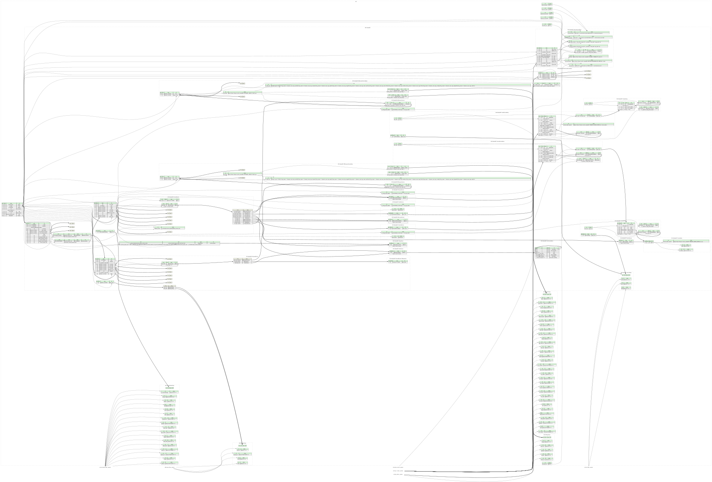

This page hosts a formal specification of Executable and Linkable Format using Kaitai Struct. This specification can be automatically translated into a variety of programming languages to get a parsing library.

meta:
id: elf
title: Executable and Linkable Format
application: SVR4 ABI and up, many *nix systems
xref:
justsolve: Executable_and_Linkable_Format
mime:
- application/x-elf
- application/x-coredump
- application/x-executable
- application/x-object
- application/x-sharedlib
pronom:
- fmt/688 # 32bit Little Endian
- fmt/689 # 32bit Big Endian
- fmt/690 # 64bit Little Endian
- fmt/691 # 64bit Big Endian
wikidata: Q1343830
tags:
- executable
- linux
license: CC0-1.0
ks-version: '0.11'
doc-ref:
- https://forge.sourceware.org/glibc/glibc-mirror/src/tag/glibc-2.43/elf/elf.h
- https://refspecs.linuxfoundation.org/elf/gabi4+/contents.html
- https://docs.oracle.com/en/operating-systems/solaris/oracle-solaris/11.4/linkers-libraries/elf-application-binary-interface.html
seq:
- id: magic
-orig-id: e_ident[EI_MAG0..EI_MAG3]
size: 4
contents: [0x7f, "ELF"]
doc: File identification, must be 0x7f + "ELF".
- id: bits
-orig-id: e_ident[EI_CLASS]
type: u1
enum: bits
doc: |
File class: designates target machine word size (32 or 64
bits). The size of many integer fields in this format will
depend on this setting.
- id: endian
-orig-id: e_ident[EI_DATA]
type: u1
enum: endian
doc: Endianness used for all integers.
- id: ei_version
-orig-id: e_ident[EI_VERSION]
type: u1
valid: 1
doc: ELF header version.
- id: abi
-orig-id: e_ident[EI_OSABI]
type: u1
enum: os_abi
doc: |
Specifies which OS- and ABI-related extensions will be used
in this ELF file.
- id: abi_version
-orig-id: e_ident[EI_ABIVERSION]
type: u1
doc: |
Version of ABI targeted by this ELF file. Interpretation
depends on `abi` attribute.
- id: pad
-orig-id: e_ident[EI_PAD..EI_NIDENT - 1]
contents: [0, 0, 0, 0, 0, 0, 0]
- id: header
type: endian_elf
instances:
sh_idx_lo_reserved:
-orig-id: SHN_LORESERVE
value: 0xff00
sh_idx_lo_proc:
-orig-id: SHN_LOPROC
value: 0xff00
sh_idx_hi_proc:
-orig-id: SHN_HIPROC
value: 0xff1f
sh_idx_lo_os:
-orig-id: SHN_LOOS
value: 0xff20
sh_idx_hi_os:
-orig-id: SHN_HIOS
value: 0xff3f
sh_idx_hi_reserved:
-orig-id: SHN_HIRESERVE
value: 0xffff
types:
phdr_type_flags:
params:
- id: value
type: u4
instances:
read:
value: value & 0x04 != 0
write:
value: value & 0x02 != 0
execute:
value: value & 0x01 != 0
mask_proc:
value: value & 0xf0000000 != 0
section_header_flags:
doc-ref:
- https://docs.oracle.com/en/operating-systems/solaris/oracle-solaris/11.4/linkers-libraries/section-headers.html#GUID-2CBE4879-2E76-426E-BB7F-CF0CB1D87C52__CHAPTER6-10675
- https://forge.sourceware.org/binutils-gdb/binutils-gdb-mirror/src/tag/binutils-2_46_1/include/elf/common.h#L614
- https://forge.sourceware.org/glibc/glibc-mirror/src/tag/glibc-2.43/elf/elf.h#L468
params:
- id: value
type: u4
instances:
write:
-orig-id: SHF_WRITE
value: value & 0x1 != 0
doc: Writable during execution
alloc:
-orig-id: SHF_ALLOC
value: value & 0x2 != 0
doc: Occupies memory during execution
exec_instr:
-orig-id: SHF_EXECINSTR
value: value & 0x4 != 0
doc: Executable machine instructions
merge:
-orig-id: SHF_MERGE
value: value & 0x10 != 0
doc: Data in this section can be merged to eliminate duplication
strings:
-orig-id: SHF_STRINGS
value: value & 0x20 != 0
doc: Contains null-terminated character strings
info_link:
-orig-id: SHF_INFO_LINK
value: value & 0x40 != 0
doc: |
Section header's `sh_info` field holds a section header table index
link_order:
-orig-id: SHF_LINK_ORDER
value: value & 0x80 != 0
doc: Preserve section ordering when linking
os_nonconforming:
-orig-id: SHF_OS_NONCONFORMING
value: value & 0x100 != 0
doc: Special OS-specific handling required
group:
-orig-id: SHF_GROUP
value: value & 0x200 != 0
doc: Member of a section group
tls:
-orig-id: SHF_TLS
value: value & 0x400 != 0
doc: |
Thread-local storage section (`.tbss` or `.tdata` according to [ELF
Handling For Thread-Local
Storage](https://www.akkadia.org/drepper/tls.pdf))
compressed:
-orig-id: SHF_COMPRESSED
value: value & 0x800 != 0
doc: Section with compressed data
mask_os:
-orig-id: SHF_MASKOS
value: value & 0x0ff0_0000 != 0
doc: OS-specific semantics
retain:
-orig-id: SHF_GNU_RETAIN
value: value & 0x0020_0000 != 0
doc: Section should not be garbage collected by the linker
doc-ref:
- https://forge.sourceware.org/binutils-gdb/binutils-gdb-mirror/src/tag/binutils-2_46_1/include/elf/common.h#L630
- https://forge.sourceware.org/glibc/glibc-mirror/src/tag/glibc-2.43/elf/elf.h#L484
gnu_mbind:
-orig-id: SHF_GNU_MBIND
value: value & 0x0100_0000 != 0
doc: Mbind section
doc-ref: https://forge.sourceware.org/binutils-gdb/binutils-gdb-mirror/src/tag/binutils-2_46_1/include/elf/common.h#L631
mask_proc:
-orig-id: SHF_MASKPROC
value: value & 0xf000_0000 != 0
doc: Processor-specific semantics
ordered:
-orig-id: SHF_ORDERED
value: value & 0x4000_0000 != 0
doc: |
Special ordering requirement (Solaris)
From <https://docs.oracle.com/en/operating-systems/solaris/oracle-solaris/11.4/linkers-libraries/section-headers.html#GUID-2CBE4879-2E76-426E-BB7F-CF0CB1D87C52__CHAPTER6-10675>:
> `SHF_ORDERED` is an older version of the functionality provided by
> `SHF_LINK_ORDER`, and has been superseded by `SHF_LINK_ORDER`.
> `SHF_ORDERED` is no longer supported.
doc-ref:
- https://forge.sourceware.org/glibc/glibc-mirror/src/tag/glibc-2.43/elf/elf.h#L485
- https://docs.oracle.com/en/operating-systems/solaris/oracle-solaris/11.4/linkers-libraries/section-headers.html#GUID-2CBE4879-2E76-426E-BB7F-CF0CB1D87C52__CHAPTER6-10675
exclude:
-orig-id: SHF_EXCLUDE
value: value & 0x8000_0000 != 0
doc: Section is excluded unless referenced or allocated (Solaris)
dt_flag_values:
doc-ref:
- 'https://refspecs.linuxbase.org/elf/gabi4+/ch5.dynamic.html Figure 5-11: DT_FLAGS values'
- https://github.com/golang/go/blob/48dfddbab3/src/debug/elf/elf.go#L1079-L1095
- https://docs.oracle.com/en/operating-systems/solaris/oracle-solaris/11.4/linkers-libraries/dynamic-section.html#GUID-4336A69A-D905-4FCE-A398-80375A9E6464__CHAPTER7-TBL-5
params:
- id: value
type: u4
instances:
origin:
value: value & 0x00000001 != 0
doc: object may reference the $ORIGIN substitution string
symbolic:
value: value & 0x00000002 != 0
doc: symbolic linking
textrel:
value: value & 0x00000004 != 0
doc: relocation entries might request modifications to a non-writable segment
bind_now:
value: value & 0x00000008 != 0
doc: |
all relocations for this object must be processed before returning
control to the program
static_tls:
value: value & 0x00000010 != 0
doc: object uses static thread-local storage scheme
dt_flag_1_values:
doc-ref:
- https://forge.sourceware.org/glibc/glibc-mirror/src/tag/glibc-2.43/elf/elf.h#L1008
- https://docs.oracle.com/en/operating-systems/solaris/oracle-solaris/11.4/linkers-libraries/dynamic-section.html#GUID-4336A69A-D905-4FCE-A398-80375A9E6464__CHAPTER6-TBL-53
params:
- id: value
type: u4
instances:
now:
-orig-id: DF_1_NOW
value: value & 0x0000_0001 != 0
doc: Set `RTLD_NOW` for this object.
rtld_global:
-affected-by: 90 # `global` is a keyword in Python
-orig-id: DF_1_GLOBAL
value: value & 0x0000_0002 != 0
doc: Set `RTLD_GLOBAL` for this object.
group:
-orig-id: DF_1_GROUP
value: value & 0x0000_0004 != 0
doc: Set `RTLD_GROUP` for this object.
no_delete:
-orig-id: DF_1_NODELETE
value: value & 0x0000_0008 != 0
doc: Set `RTLD_NODELETE` for this object.
load_fltr:
-orig-id: DF_1_LOADFLTR
value: value & 0x0000_0010 != 0
doc: Trigger filtee loading at runtime.
init_first:
-orig-id: DF_1_INITFIRST
value: value & 0x0000_0020 != 0
doc: Set `RTLD_INITFIRST` for this object.
no_open:
-orig-id: DF_1_NOOPEN
value: value & 0x0000_0040 != 0
doc: Set `RTLD_NOOPEN` for this object.
origin:
-orig-id: DF_1_ORIGIN
value: value & 0x0000_0080 != 0
doc: |
`$ORIGIN` must be handled.
direct:
-orig-id: DF_1_DIRECT
value: value & 0x0000_0100 != 0
doc: Direct binding enabled.
trans:
-orig-id: DF_1_TRANS
value: value & 0x0000_0200 != 0
doc-ref: https://forge.sourceware.org/glibc/glibc-mirror/src/tag/glibc-2.43/elf/elf.h#L1019
interpose:
-orig-id: DF_1_INTERPOSE
value: value & 0x0000_0400 != 0
doc: Object is used to interpose.
no_def_lib:
-orig-id: DF_1_NODEFLIB
value: value & 0x0000_0800 != 0
doc: Ignore the default library search path.
no_dump:
-orig-id: DF_1_NODUMP
value: value & 0x0000_1000 != 0
doc: Object can't be dldump'ed.
conf_alt:
-orig-id: DF_1_CONFALT
value: value & 0x0000_2000 != 0
doc: Configuration alternative created.
doc-ref: https://forge.sourceware.org/glibc/glibc-mirror/src/tag/glibc-2.43/elf/elf.h#L1023
end_filtee:
-orig-id: DF_1_ENDFILTEE
value: value & 0x0000_4000 != 0
doc: Filtee terminates filters search.
disp_rel_dne:
-orig-id: DF_1_DISPRELDNE
value: value & 0x0000_8000 != 0
doc: Displacement relocation done (applied at build time).
disp_rel_pnd:
-orig-id: DF_1_DISPRELPND
value: value & 0x0001_0000 != 0
doc: Displacement relocation pending (applied at runtime).
no_direct:
-orig-id: DF_1_NODIRECT
value: value & 0x0002_0000 != 0
doc: Object contains non-direct bindings.
ign_mul_def:
-orig-id: DF_1_IGNMULDEF
value: value & 0x0004_0000 != 0
no_ksyms:
-orig-id: DF_1_NOKSYMS
value: value & 0x0008_0000 != 0
no_hdr:
-orig-id: DF_1_NOHDR
value: value & 0x0010_0000 != 0
edited:
-orig-id: DF_1_EDITED
value: value & 0x0020_0000 != 0
doc: Object is modified after built.
no_reloc:
-orig-id: DF_1_NORELOC
value: value & 0x0040_0000 != 0
sym_intpose:
-orig-id: DF_1_SYMINTPOSE
value: value & 0x0080_0000 != 0
doc: Object has individual symbol interposers.
glob_audit:
-orig-id: DF_1_GLOBAUDIT
value: value & 0x0100_0000 != 0
doc: Global auditing required.
singleton:
-orig-id: DF_1_SINGLETON
value: value & 0x0200_0000 != 0
doc: Singleton symbols are used.
stub:
-orig-id: DF_1_STUB
value: value & 0x0400_0000 != 0
doc: |
Object is a stub.
See [Stub Objects](https://docs.oracle.com/en/operating-systems/solaris/oracle-solaris/11.4/linkers-libraries/stub-objects.html).
pie:
-orig-id: DF_1_PIE
value: value & 0x0800_0000 != 0
doc: Object is a Position Independent Executable (PIE).
kmod:
-orig-id: DF_1_KMOD
value: value & 0x1000_0000 != 0
doc: Object is a kernel module.
weak_filter:
-orig-id: DF_1_WEAKFILTER
value: value & 0x2000_0000 != 0
doc: Object is a weak standard filter.
no_common:
-orig-id: DF_1_NOCOMMON
value: value & 0x4000_0000 != 0
doc-ref: https://forge.sourceware.org/glibc/glibc-mirror/src/tag/glibc-2.43/elf/elf.h#L1040
doc: No COMMON symbols exist.
endian_elf:
meta:
endian:
switch-on: _root.endian
cases:
'endian::le': le
'endian::be': be
doc-ref:
- https://gabi.xinuos.com/v42/elf/02-eheader.html
- https://docs.oracle.com/en/operating-systems/solaris/oracle-solaris/11.4/linkers-libraries/elf-header.html
seq:
- id: e_type
type: u2
enum: obj_type
- id: machine
type: u2
enum: machine
valid:
in-enum: true
- id: e_version
type: u4
- id: entry_point
-orig-id: e_entry
type:
switch-on: _root.bits
cases:
'bits::b32': u4
'bits::b64': u8
- id: ofs_program_headers
-orig-id: e_phoff
type:
switch-on: _root.bits
cases:
'bits::b32': u4
'bits::b64': u8
- id: ofs_section_headers
-orig-id: e_shoff
type:
switch-on: _root.bits
cases:
'bits::b32': u4
'bits::b64': u8
- id: flags
-orig-id: e_flags
size: 4
- id: e_ehsize
-orig-id: e_ehsize
type: u2
- id: program_header_size
-orig-id: e_phentsize
type: u2
- id: num_program_headers
-orig-id: e_phnum
type: u2
- id: section_header_size
-orig-id: e_shentsize
type: u2
- id: num_section_headers
-orig-id: e_shnum
type: u2
- id: section_names_idx
-orig-id: e_shstrndx
type: u2
instances:
program_headers:
pos: ofs_program_headers
size: program_header_size
type: program_header
repeat: expr
repeat-expr: num_program_headers
section_headers:
pos: ofs_section_headers
size: section_header_size
type: section_header
repeat: expr
repeat-expr: num_section_headers
section_names:
pos: section_headers[section_names_idx].ofs_body
size: section_headers[section_names_idx].len_body
type: strings_struct
if: |
section_names_idx != section_header_idx_special::undefined.to_i
and section_names_idx < _root.header.num_section_headers
types:
program_header:
-orig-id:
- Elf32_Phdr
- Elf64_Phdr
doc-ref:
- https://gabi.xinuos.com/v42/elf/07-pheader.html#program-header-entry
- https://docs.oracle.com/en/operating-systems/solaris/oracle-solaris/11.4/linkers-libraries/program-header.html
-webide-representation: "{type} - f:{flags_obj:flags} (o:{ofs_body}, s:{len_body:dec})"
seq:
- id: type
-orig-id: p_type
type: u4
enum: ph_type
- id: flags64
-orig-id: p_flags
type: u4
if: _root.bits == bits::b64
- id: ofs_body
-orig-id: p_offset
type:
switch-on: _root.bits
cases:
'bits::b32': u4
'bits::b64': u8
- id: virt_addr
-orig-id: p_vaddr
type:
switch-on: _root.bits
cases:
'bits::b32': u4
'bits::b64': u8
- id: phys_addr
-orig-id: p_paddr
type:
switch-on: _root.bits
cases:
'bits::b32': u4
'bits::b64': u8
- id: len_body
-orig-id: p_filesz
type:
switch-on: _root.bits
cases:
'bits::b32': u4
'bits::b64': u8
- id: memory_size
-orig-id: p_memsz
type:
switch-on: _root.bits
cases:
'bits::b32': u4
'bits::b64': u8
- id: flags32
-orig-id: p_flags
type: u4
if: _root.bits == bits::b32
- id: align
-orig-id: p_align
type:
switch-on: _root.bits
cases:
'bits::b32': u4
'bits::b64': u8
instances:
body:
io: _root._io
pos: ofs_body
size: len_body
type:
switch-on: type
cases:
'ph_type::interp': ph_interpreter
'ph_type::dynamic': ph_dynamic_section
'ph_type::note': note_section
# This condition is necessary for successfully parsing ELF files
# embedded within `.gnu_debugdata` sections (see
# https://github.com/kaitai-io/kaitai_struct_formats/pull/752#discussion_r3571558218).
#
# These ELF files have all program headers and most section headers
# (except for a few, such as `.gnu_debugdata` itself) of the
# original (parent) ELF file, but the types of most sections have
# been changed to `sh_type::nobits` (`SHT_NOBITS`), and the
# `len_body` fields in many program headers have been zeroed,
# sometimes along with the `ofs_body` field. Expecting these program
# headers with `len_body == 0` to have a valid body would lead to
# parse errors.
if: len_body != 0
doc: |
Note: a program header may not have a valid body in the same ELF
file, so accessing `body` may result in reading garbage or
triggering EOF errors.
In particular, `*.debug` files produced by elfutils'
`eu-strip --strip-debug` (as used by Fedora/RHEL and other
RPM-based distros for their `*-debuginfo` packages, e.g.
`glibc-debuginfo`) copy the original binary's program header table
verbatim, including `ofs_body`/`len_body` (i.e.
`p_offset`/`p_filesz`), while dropping the actual contents of most
segments. Such segments can be recognized by the fact that the
corresponding section headers have type `sh_type::nobits`
(`SHT_NOBITS`). However, this Kaitai Struct implementation doesn't
know the mapping between program headers and section headers, so
this must be handled externally.
`*.debug` files from Debian/Ubuntu `*-dbg` packages (e.g.
`libc6-dbg`) are usually not affected by this issue, because they
are produced using GNU Binutils (`objcopy --only-keep-debug`),
which zeroes `len_body` for segments whose contents were omitted
(which reliably tells us that there is no `body`).
flags_obj:
type:
switch-on: _root.bits
cases:
'bits::b32': phdr_type_flags(flags32)
'bits::b64': phdr_type_flags(flags64)
-webide-parse-mode: eager
types:
ph_interpreter:
doc-ref:
- https://gabi.xinuos.com/v42/elf/08-dynamic.html#program-interpreter
- https://docs.oracle.com/en/operating-systems/solaris/oracle-solaris/11.4/linkers-libraries/program-interpreter.html
-webide-representation: '{path_name}'
seq:
- id: path_name
type: strz
encoding: ASCII
section_header:
-orig-id:
- Elf32_Shdr
- Elf64_Shdr
doc-ref:
- https://gabi.xinuos.com/v42/elf/03-sheader.html#section-header-table-entry
- https://docs.oracle.com/en/operating-systems/solaris/oracle-solaris/11.4/linkers-libraries/section-headers.html
-webide-representation: "{name} ({type}) - f:{flags_obj:flags} (o:{ofs_body}, s:{len_body:dec})"
seq:
- id: ofs_name
-orig-id: sh_name
type: u4
- id: type
-orig-id: sh_type
type: u4
enum: sh_type
- id: flags
-orig-id: sh_flags
type:
switch-on: _root.bits
cases:
'bits::b32': u4
'bits::b64': u8
- id: addr
-orig-id: sh_addr
type:
switch-on: _root.bits
cases:
'bits::b32': u4
'bits::b64': u8
- id: ofs_body
-orig-id: sh_offset
type:
switch-on: _root.bits
cases:
'bits::b32': u4
'bits::b64': u8
- id: len_body
-orig-id: sh_size
type:
switch-on: _root.bits
cases:
'bits::b32': u4
'bits::b64': u8
- id: linked_section_idx
-orig-id: sh_link
type: u4
- id: info
-orig-id: sh_info
type: u4
- id: align
-orig-id: sh_addralign
type:
switch-on: _root.bits
cases:
'bits::b32': u4
'bits::b64': u8
- id: entry_size
-orig-id: sh_entsize
type:
switch-on: _root.bits
cases:
'bits::b32': u4
'bits::b64': u8
instances:
body:
io: _root._io
pos: ofs_body
size: len_body
type:
switch-on: type
cases:
'sh_type::dynamic': sh_dynamic_section
'sh_type::strtab': strings_struct
'sh_type::dynsym': dynsym_section
'sh_type::symtab': dynsym_section
'sh_type::note': note_section
'sh_type::rel': relocation_section(false)
'sh_type::rela': relocation_section(true)
'sh_type::gnu_versym': versym_section
'sh_type::gnu_verdef': verdef_section
'sh_type::gnu_verneed': verneed_section
if: type != sh_type::nobits
linked_section:
value: _root.header.section_headers[linked_section_idx]
if: |
linked_section_idx != section_header_idx_special::undefined.to_i
and linked_section_idx < _root.header.num_section_headers
doc: may reference a later section header, so don't try to access too early (use only lazy `instances`)
doc-ref: https://refspecs.linuxfoundation.org/elf/gabi4+/ch4.sheader.html#sh_link
name:
io: _root.header.section_names._io
pos: ofs_name
type: strz
encoding: ASCII
-webide-parse-mode: eager
flags_obj:
type: section_header_flags(flags)
-webide-parse-mode: eager
strings_struct:
seq:
- id: entries
type: strz
repeat: eos
# For an explanation of why UTF-8 instead of ASCII, see the comment
# on the `name` attribute in the `dynsym_section_entry` type.
encoding: UTF-8
sh_dynamic_section:
doc: |
Same type as `ph_dynamic_section`, but it depends on
`_parent.linked_section`, so it can be used only in the
`section_header` type. See the documentation for `ph_dynamic_section`
for more details.
doc-ref:
- https://gabi.xinuos.com/v42/elf/08-dynamic.html#dynamic-section
- https://docs.oracle.com/en/operating-systems/solaris/oracle-solaris/11.4/linkers-libraries/dynamic-section.html
seq:
- id: entries
-orig-id: _DYNAMIC
type: sh_dynamic_section_entry
repeat: until
repeat-until: _.tag_enum == dynamic_array_tags::null
instances:
is_string_table_linked:
value: _parent.linked_section.type == sh_type::strtab
sh_dynamic_section_entry:
doc: |
Same type as `ph_dynamic_section_entry`, but with the `value_str`
instance - see the documentation for `ph_dynamic_section` for more
details.
doc-ref:
- https://gabi.xinuos.com/v42/elf/08-dynamic.html#dynamic-section
- https://docs.oracle.com/en/operating-systems/solaris/oracle-solaris/11.4/linkers-libraries/dynamic-section.html
-webide-representation: "{tag_enum}: {value_or_ptr} {value_str} {flag_1_values:flags}"
seq:
- id: tag
type:
switch-on: _root.bits
cases:
'bits::b32': u4
'bits::b64': u8
- id: value_or_ptr
type:
switch-on: _root.bits
cases:
'bits::b32': u4
'bits::b64': u8
instances:
tag_enum:
value: tag
enum: dynamic_array_tags
flag_values:
type: dt_flag_values(value_or_ptr)
if: "tag_enum == dynamic_array_tags::flags"
-webide-parse-mode: eager
flag_1_values:
type: dt_flag_1_values(value_or_ptr)
if: "tag_enum == dynamic_array_tags::flags_1"
-webide-parse-mode: eager
value_str:
io: _parent._parent.linked_section.body.as<strings_struct>._io
pos: value_or_ptr
type: strz
encoding: ASCII
if: is_value_str and _parent.is_string_table_linked
-webide-parse-mode: eager
is_value_str:
value: |
value_or_ptr != 0 and (
tag_enum == dynamic_array_tags::needed or
tag_enum == dynamic_array_tags::soname or
tag_enum == dynamic_array_tags::rpath or
tag_enum == dynamic_array_tags::runpath or
tag_enum == dynamic_array_tags::sunw_auxiliary or
tag_enum == dynamic_array_tags::sunw_filter or
tag_enum == dynamic_array_tags::auxiliary or
tag_enum == dynamic_array_tags::filter or
tag_enum == dynamic_array_tags::config or
tag_enum == dynamic_array_tags::depaudit or
tag_enum == dynamic_array_tags::audit
)
ph_dynamic_section:
doc: |
Same type as `sh_dynamic_section`, but it does not use
`_parent.linked_section`, which is available only in section headers
(i.e. when `_parent` is of type `section_header`). This allows it to
be used in program headers (i.e. from the `program_header` type).
The inability to access `linked_section` means that offsets in the
string table (which should be stored in the `.dynstr` section) will
not be resolved to strings and will be provided only in raw form in
the `value_or_ptr` field. In other words, the
`ph_dynamic_section_entry` type has no `value_str` instance, unlike
the `sh_dynamic_section_entry` type.
There is another way to find the string table referenced by the
dynamic section entries that does not rely on `linked_section`, but is
a bit more complex (and is therefore considered out of scope of this
.ksy spec): the mandatory dynamic tag `dynamic_array_tags::strtab`
(`DT_STRTAB`) specifies the virtual address of the string table, and
`dynamic_array_tags::strsz` (`DT_STRSZ`) specifies its size in bytes.
The virtual address can be converted to a file offset by reading the
program headers - see the source code for the `readelf` command:
1. [`offset_from_vma` call site with an address from `DT_STRTAB` as an
argument](https://forge.sourceware.org/binutils-gdb/binutils-gdb-mirror/src/tag/binutils-2_46_1/binutils/readelf.c#L13018)
2. [`offset_from_vma` function
definition](https://forge.sourceware.org/binutils-gdb/binutils-gdb-mirror/src/tag/binutils-2_46_1/binutils/readelf.c#L7788)
doc-ref:
- https://gabi.xinuos.com/v42/elf/08-dynamic.html#dynamic-section
- https://docs.oracle.com/en/operating-systems/solaris/oracle-solaris/11.4/linkers-libraries/dynamic-section.html
seq:
- id: entries
-orig-id: _DYNAMIC
type: ph_dynamic_section_entry
repeat: until
repeat-until: _.tag_enum == dynamic_array_tags::null
ph_dynamic_section_entry:
doc: |
Same type as `sh_dynamic_section_entry`, but without the `value_str`
instance - see the documentation for `ph_dynamic_section` for more
details.
doc-ref:
- https://gabi.xinuos.com/v42/elf/08-dynamic.html#dynamic-section
- https://docs.oracle.com/en/operating-systems/solaris/oracle-solaris/11.4/linkers-libraries/dynamic-section.html
-webide-representation: "{tag_enum}: {value_or_ptr} is_str:{is_value_str} {flag_1_values:flags}"
seq:
- id: tag
type:
switch-on: _root.bits
cases:
'bits::b32': u4
'bits::b64': u8
- id: value_or_ptr
type:
switch-on: _root.bits
cases:
'bits::b32': u4
'bits::b64': u8
instances:
tag_enum:
value: tag
enum: dynamic_array_tags
flag_values:
type: dt_flag_values(value_or_ptr)
if: "tag_enum == dynamic_array_tags::flags"
-webide-parse-mode: eager
flag_1_values:
type: dt_flag_1_values(value_or_ptr)
if: "tag_enum == dynamic_array_tags::flags_1"
-webide-parse-mode: eager
is_value_str:
value: |
value_or_ptr != 0 and (
tag_enum == dynamic_array_tags::needed or
tag_enum == dynamic_array_tags::soname or
tag_enum == dynamic_array_tags::rpath or
tag_enum == dynamic_array_tags::runpath or
tag_enum == dynamic_array_tags::sunw_auxiliary or
tag_enum == dynamic_array_tags::sunw_filter or
tag_enum == dynamic_array_tags::auxiliary or
tag_enum == dynamic_array_tags::filter or
tag_enum == dynamic_array_tags::config or
tag_enum == dynamic_array_tags::depaudit or
tag_enum == dynamic_array_tags::audit
)
dynsym_section:
seq:
- id: entries
type: dynsym_section_entry
repeat: eos
instances:
is_string_table_linked:
value: _parent.linked_section.type == sh_type::strtab
dynsym_section_entry:
-orig-id:
- Elf32_Sym
- Elf64_Sym
doc-ref:
- https://gabi.xinuos.com/elf/05-symtab.html
- https://docs.oracle.com/en/operating-systems/solaris/oracle-solaris/11.4/linkers-libraries/symbol-table-section.html
-webide-representation: 'v:{value} s:{size:dec} t:{type} b:{bind} vis:{visibility} i:{sh_idx:dec}[={sh_idx_special}] n:{name}'
seq:
- id: ofs_name
-orig-id: st_name
type: u4
- id: value_b32
type: u4
if: _root.bits == bits::b32
- id: size_b32
type: u4
if: _root.bits == bits::b32
- id: bind
-orig-id: ELF32_ST_BIND(st_info)
type: b4
enum: symbol_binding
- id: type
-orig-id: ELF32_ST_TYPE(st_info)
type: b4
enum: symbol_type
- id: other
-orig-id: st_other
type: u1
doc: don't read this field, access `visibility` instead
- id: sh_idx
-orig-id: st_shndx
type: u2
doc: section header index
- id: value_b64
type: u8
if: _root.bits == bits::b64
- id: size_b64
type: u8
if: _root.bits == bits::b64
instances:
value:
value: |
_root.bits == bits::b32 ? value_b32 :
_root.bits == bits::b64 ? value_b64 :
0
size:
value: |
_root.bits == bits::b32 ? size_b32 :
_root.bits == bits::b64 ? size_b64 :
0
name:
io: _parent._parent.linked_section.body.as<strings_struct>._io
pos: ofs_name
type: strz
# UTF-8 is used (instead of ASCII) because Golang binaries may
# contain specific Unicode code points in symbol identifiers.
#
# See
# * <https://go.dev/doc/asm#symbols>: "the assembler allows the
# middle dot character U+00B7 and the division slash U+2215 in
# identifiers"
# * <https://github.com/kaitai-io/kaitai_struct_formats/issues/520>
encoding: UTF-8
if: ofs_name != 0 and _parent.is_string_table_linked
-webide-parse-mode: eager
visibility:
-orig-id:
- ELF32_ST_VISIBILITY
- ELF64_ST_VISIBILITY
value: other & 0x7
enum: symbol_visibility
doc-ref: https://github.com/xinuos/gabi/commit/acd5ebb2962cf243dca4983bc934442b42ef96f5
sh_idx_special:
value: sh_idx
enum: section_header_idx_special
is_sh_idx_reserved:
value: |
sh_idx >= _root.sh_idx_lo_reserved and
sh_idx <= _root.sh_idx_hi_reserved
is_sh_idx_proc:
value: |
sh_idx >= _root.sh_idx_lo_proc and
sh_idx <= _root.sh_idx_hi_proc
is_sh_idx_os:
value: |
sh_idx >= _root.sh_idx_lo_os and
sh_idx <= _root.sh_idx_hi_os
note_section:
seq:
- id: entries
type: note_section_entry
repeat: eos
note_section_entry:
doc-ref:
- https://docs.oracle.com/en/operating-systems/solaris/oracle-solaris/11.4/linkers-libraries/note-section.html
# The following source claims that note's `name` and `descriptor` should be padded
# to 8 bytes in 64-bit ELFs, not always to 4 - although this seems to be an idea of
# the original spec, it did not catch on in the real world and most implementations
# always use 4-byte alignment - see
# <https://fa.linux.kernel.narkive.com/2Za5xb58/patch-01-02-elf-always-define-elf-addr-t-in-linux-elf-h#post13>
- https://refspecs.linuxfoundation.org/elf/gabi4+/ch5.pheader.html#note_section
seq:
- id: len_name
type: u4
- id: len_descriptor
type: u4
- id: type
type: u4
- id: name
size: len_name
terminator: 0
doc: |
Although the ELF specification seems to hint that the `note_name` field
is ASCII this isn't the case for Linux binaries that have a
`.gnu.build.attributes` section.
doc-ref: https://fedoraproject.org/wiki/Toolchain/Watermark#Proposed_Specification_for_non-loaded_notes
- id: name_padding
size: -len_name % 4
- id: descriptor
size: len_descriptor
- id: descriptor_padding
size: -len_descriptor % 4
relocation_section:
doc-ref:
- https://docs.oracle.com/en/operating-systems/solaris/oracle-solaris/11.4/linkers-libraries/relocation-sections.html
- https://refspecs.linuxfoundation.org/elf/gabi4+/ch4.reloc.html
params:
- id: has_addend
type: bool
seq:
- id: entries
type: relocation_section_entry
repeat: eos
relocation_section_entry:
seq:
- id: offset
type:
switch-on: _root.bits
cases:
'bits::b32': u4
'bits::b64': u8
- id: info
type:
switch-on: _root.bits
cases:
'bits::b32': u4
'bits::b64': u8
- id: addend
type:
switch-on: _root.bits
cases:
'bits::b32': s4
'bits::b64': s8
if: _parent.has_addend
versym_section:
doc: |
Symbol Version Table, contained in the special section named
`.gnu.version` with the section type `sh_type::gnu_versym`
(`SHT_GNU_versym`).
This section must have the same number of entries as the Dynamic
Symbol Table in the `.dynsym` section (section type `sh_type::dynsym`
/ `SHT_DYNSYM`). Each entry specifies the version defined for or
required by the corresponding symbol in the Dynamic Symbol Table.
doc-ref:
- https://refspecs.linuxfoundation.org/LSB_5.0.0/LSB-Core-generic/LSB-Core-generic/symversion.html#SYMVERTBL
- https://docs.oracle.com/en/operating-systems/solaris/oracle-solaris/11.4/linkers-libraries/version-symbol-section.html
- https://www.akkadia.org/drepper/symbol-versioning
seq:
- id: entries
-orig-id:
- Elf32_Versym
- Elf64_Versym
type: version_index
repeat: eos
doc: |
Version indexes for the corresponding symbols in the Dynamic
Symbol Table (`.dynsym` section).
These values are not the versions themselves: they are keys that
are matched against the `version_index` (`vd_ndx`) field of the
`verdef_section_entry` (`Elfxx_Verdef`) type if the symbol is
defined in this object, or the `version_index` (`vna_other`) field
of the `vernaux_entry` (`Elfxx_Vernaux`) type if the symbol is
required from another object. The `name` instance of the matched
entry specifies the version of the symbol.
verdef_section:
doc: |
Version Definitions, contained in the special section named
`.gnu.version_d` with the section type `sh_type::gnu_verdef`
(`SHT_GNU_verdef`).
The number of entries in this section must match the value of the
dynamic tag `dynamic_array_tags::verdefnum` (`DT_VERDEFNUM`) in the
Dynamic Section (`.dynamic`).
`_parent.linked_section` must be the string table that contains the
strings referenced by this section. Specifically, the string table in
the `.dynstr` section should be used (side note: the `readelf` command
doesn't even check which string table `sh_link` points to, and always
uses `.dynstr` for the lookups - see
<https://forge.sourceware.org/binutils-gdb/binutils-gdb-mirror/src/tag/binutils-2_46_1/binutils/readelf.c#L13787>).
The `is_string_table_linked` value instance indicates whether the
string table is linked. If it is not, version names (the `name`
instance in the `verdaux_entry` type) will not be available.
doc-ref:
- https://refspecs.linuxfoundation.org/LSB_5.0.0/LSB-Core-generic/LSB-Core-generic/symversion.html#SYMVERDEFS
- https://docs.oracle.com/en/operating-systems/solaris/oracle-solaris/11.4/linkers-libraries/version-definition-section.html
- https://www.akkadia.org/drepper/symbol-versioning
seq:
- id: first_entry
type: verdef_section_entry
instances:
is_string_table_linked:
value: _parent.linked_section.type == sh_type::strtab
doc: |
Indicates whether a string table is linked. This should always be
`true` in spec-compliant ELF files. If it is `false`, the string
offsets in this section will not be resolved to strings.
num_entries:
value: _parent.info
doc: Number of entries (version definitions)
doc-ref: https://docs.oracle.com/en/operating-systems/solaris/oracle-solaris/11.4/linkers-libraries/section-headers.html#GUID-2CBE4879-2E76-426E-BB7F-CF0CB1D87C52__CHAPTER6-47976
verdef_section_entry:
-orig-id:
- Elf32_Verdef
- Elf64_Verdef
- Elfxx_Verdef
doc-ref:
- https://refspecs.linuxfoundation.org/LSB_5.0.0/LSB-Core-generic/LSB-Core-generic/symversion.html#VERDEFENTRIES
- https://docs.oracle.com/en/operating-systems/solaris/oracle-solaris/11.4/linkers-libraries/version-definition-section.html
- https://www.akkadia.org/drepper/symbol-versioning
-webide-representation: 'i:{version_index:dec}[={version_index_special}] cnt:{num_aux_entries:dec} f:{flags_obj:flags} n:{first_aux}'
seq:
- size: 0
if: ofs_start < 0
- id: version
-orig-id: vd_version
type: u2
valid: 1
doc: Version of the structure. Must be set to 1.
- id: flags
-orig-id: vd_flags
type: u2
doc: Version information flag bitmask. Access `flags_obj` instead.
- id: version_index
-orig-id: vd_ndx
type: u2
valid:
# sanity check: the `is_hidden` bit (`VERSYM_HIDDEN`) should not be set
expr: _ & 0x8000 == 0
doc: |
Version index assigned to this version definition. A unique index
that entries in the Symbol Version Table (the `versym_section`
type) use to reference the corresponding version definition.
doc-ref: https://docs.oracle.com/en/operating-systems/solaris/oracle-solaris/11.4/linkers-libraries/version-definition-section.html
- id: num_aux_entries
-orig-id: vd_cnt
type: u2
valid:
# From <https://docs.oracle.com/en/operating-systems/solaris/oracle-solaris/11.4/linkers-libraries/version-definition-section.html>:
#
# > `vd_aux`
# >
# > (...) The first element of the array must exist.
min: 1
doc: Number of associated auxiliary entries.
- id: hash
-orig-id: vd_hash
type: u4
doc: Version name hash value (ELF hash function).
- id: ofs_first_aux
-orig-id: vd_aux
type: u4
valid:
min: _sizeof
doc: |
Byte offset to the first `verdaux_entry` (`Elfxx_Verdaux`)
associated with this version definition. The offset is relative to
the start of this `verdef_section_entry`.
- id: ofs_next
-orig-id: vd_next
type: u4
valid:
expr: _ == 0 or _ >= _sizeof
doc: |
Byte offset to the next verdef entry, relative to the start of
this `verdef_section_entry`. A value of zero means that there is
no next entry.
instances:
ofs_start:
value: _io.pos
flags_obj:
type: version_flags(flags)
-webide-parse-mode: eager
version_index_special:
value: version_index
enum: version_index_special
first_aux:
pos: ofs_start + ofs_first_aux
type: verdaux_entry
parent: _parent
doc: |
First auxiliary entry of type `verdaux_entry` (`Elfxx_Verdaux`).
The rest follow its `next` instance.
-webide-parse-mode: eager
next:
pos: ofs_start + ofs_next
type: verdef_section_entry
parent: _parent
if: ofs_next != 0
verdaux_entry:
-orig-id:
- Elf32_Verdaux
- Elf64_Verdaux
- Elfxx_Verdaux
doc-ref:
- https://refspecs.linuxfoundation.org/LSB_5.0.0/LSB-Core-generic/LSB-Core-generic/symversion.html#VERDEFEXTS
- https://docs.oracle.com/en/operating-systems/solaris/oracle-solaris/11.4/linkers-libraries/version-definition-section.html
- https://www.akkadia.org/drepper/symbol-versioning
-webide-representation: '{name}'
seq:
- size: 0
if: ofs_start < 0
- id: ofs_name
-orig-id: vda_name
type: u4
doc: |
Byte offset to the version or dependency name string in the linked
string table.
- id: ofs_next
-orig-id: vda_next
type: u4
valid:
expr: _ == 0 or _ >= _sizeof
doc: |
Byte offset to the next verdaux entry, relative to the start of
this `verdaux_entry`. A value of zero means that there is no next
entry.
instances:
ofs_start:
value: _io.pos
name:
io: _parent._parent.linked_section.body.as<strings_struct>._io
pos: ofs_name
type: strz
encoding: UTF-8
if: _parent.is_string_table_linked
-webide-parse-mode: eager
next:
pos: ofs_start + ofs_next
type: verdaux_entry
parent: _parent
if: ofs_next != 0
verneed_section:
doc: |
Version Requirements, contained in the special section named
`.gnu.version_r` with the section type `sh_type::gnu_verneed`
(`SHT_GNU_verneed`). This section defines the required versions of
dynamic symbols from other shared objects.
The number of entries in this section must match the value of the
dynamic tag `dynamic_array_tags::verneednum` (`DT_VERNEEDNUM`) in the
Dynamic Section (`.dynamic`).
`_parent.linked_section` must be the string table that contains the
strings referenced by this section. Specifically, the string table in
the `.dynstr` section should be used (side note: the `readelf` command
doesn't even check which string table `sh_link` points to, and always
uses `.dynstr` for the lookups - see
<https://forge.sourceware.org/binutils-gdb/binutils-gdb-mirror/src/tag/binutils-2_46_1/binutils/readelf.c#L13941>).
The `is_string_table_linked` value instance indicates whether the
string table is linked. If it is not, file names (the `file_name`
instance in the `verneed_section_entry` type) or version names (the
`name` instance in the `vernaux_entry` type) will not be available.
doc-ref:
- https://refspecs.linuxfoundation.org/LSB_5.0.0/LSB-Core-generic/LSB-Core-generic/symversion.html#SYMVERRQMTS
- https://docs.oracle.com/en/operating-systems/solaris/oracle-solaris/11.4/linkers-libraries/version-dependency-section.html
- https://www.akkadia.org/drepper/symbol-versioning
seq:
- id: first_entry
type: verneed_section_entry
instances:
is_string_table_linked:
value: _parent.linked_section.type == sh_type::strtab
doc: |
Indicates whether a string table is linked. This should always be
`true` in spec-compliant ELF files. If it is `false`, the string
offsets in this section will not be resolved to strings.
num_entries:
value: _parent.info
doc: Number of entries (dependency versions)
doc-ref: https://docs.oracle.com/en/operating-systems/solaris/oracle-solaris/11.4/linkers-libraries/section-headers.html#GUID-2CBE4879-2E76-426E-BB7F-CF0CB1D87C52__CHAPTER6-47976
verneed_section_entry:
-orig-id:
- Elf32_Verneed
- Elf64_Verneed
- Elfxx_Verneed
doc-ref:
- https://refspecs.linuxfoundation.org/LSB_5.0.0/LSB-Core-generic/LSB-Core-generic/symversion.html#VERNEEDFIG
- https://docs.oracle.com/en/operating-systems/solaris/oracle-solaris/11.4/linkers-libraries/version-dependency-section.html
- https://www.akkadia.org/drepper/symbol-versioning
-webide-representation: 'file:{file_name} cnt:{num_aux_entries:dec}'
seq:
- size: 0
if: ofs_start < 0
- id: version
-orig-id: vn_version
type: u2
valid: 1
doc: Version of the structure. Must be set to 1.
- id: num_aux_entries
-orig-id: vn_cnt
type: u2
valid:
# From <https://docs.oracle.com/en/operating-systems/solaris/oracle-solaris/11.4/linkers-libraries/version-dependency-section.html>:
#
# > `vn_aux`
# >
# > (...) At least one version dependency must exist.
min: 1
doc: Number of associated auxiliary entries.
- id: ofs_file_name
-orig-id: vn_file
type: u4
doc: Byte offset to the file name string in the linked string table.
- id: ofs_first_aux
-orig-id: vn_aux
type: u4
valid:
min: _sizeof
doc: |
Byte offset to the first associated `vernaux_entry`
(`Elfxx_Vernaux`). The offset is relative to the start of this
`verneed_section_entry`.
- id: ofs_next
-orig-id: vn_next
type: u4
valid:
expr: _ == 0 or _ >= _sizeof
doc: |
Byte offset to the next verneed entry, relative to the start of
this `verneed_section_entry`. A value of zero means that there is
no next entry.
instances:
ofs_start:
value: _io.pos
file_name:
io: _parent._parent.linked_section.body.as<strings_struct>._io
pos: ofs_file_name
type: strz
encoding: UTF-8
if: _parent.is_string_table_linked
-webide-parse-mode: eager
first_aux:
pos: ofs_start + ofs_first_aux
type: vernaux_entry
parent: _parent
doc: |
First auxiliary entry of type `vernaux_entry` (`Elfxx_Vernaux`).
The rest follow its `next` instance.
-webide-parse-mode: eager
next:
pos: ofs_start + ofs_next
type: verneed_section_entry
parent: _parent
if: ofs_next != 0
vernaux_entry:
-orig-id:
- Elf32_Vernaux
- Elf64_Vernaux
- Elfxx_Vernaux
doc-ref:
- https://refspecs.linuxfoundation.org/LSB_5.0.0/LSB-Core-generic/LSB-Core-generic/symversion.html#VERNEEDEXTFIG
- https://docs.oracle.com/en/operating-systems/solaris/oracle-solaris/11.4/linkers-libraries/version-dependency-section.html
- https://www.akkadia.org/drepper/symbol-versioning
-webide-representation: '{version_index} f:{flags_obj:flags} n:{name}'
seq:
- size: 0
if: ofs_start < 0
- id: hash
-orig-id: vna_hash
type: u4
doc: Dependency name hash value (ELF hash function).
- id: flags
-orig-id: vna_flags
type: u2
doc: Dependency information flag bitmask. Access `flags_obj` instead.
- id: version_index
-orig-id: vna_other
type: version_index
doc: |
Version index assigned to this dependency version. A unique index
that entries in the Symbol Version Table (the `versym_section`
type) use to reference the corresponding dependency version.
doc-ref: https://docs.oracle.com/en/operating-systems/solaris/oracle-solaris/11.4/linkers-libraries/version-dependency-section.html
- id: ofs_name
-orig-id: vna_name
type: u4
doc: |
Byte offset to the dependency name string in the linked string
table.
- id: ofs_next
-orig-id: vna_next
type: u4
valid:
expr: _ == 0 or _ >= _sizeof
doc: |
Byte offset to the next vernaux entry, relative to the start of
this `vernaux_entry`. A value of zero means that there is no next
entry.
instances:
ofs_start:
value: _io.pos
flags_obj:
type: version_flags(flags)
-webide-parse-mode: eager
name:
io: _parent._parent.linked_section.body.as<strings_struct>._io
pos: ofs_name
type: strz
encoding: UTF-8
if: _parent.is_string_table_linked
-webide-parse-mode: eager
next:
pos: ofs_start + ofs_next
type: vernaux_entry
parent: _parent
if: ofs_next != 0
version_index:
-webide-representation: 'i:{value:dec}[={version_index_special}] h:{is_hidden}'
seq:
- id: raw
type: u2
doc: |
Raw value, don't read this field - access `value`,
`version_index_special` and `is_hidden` instead.
instances:
value:
-orig-id: VERSYM_VERSION
value: raw & 0x7fff
doc: |
The values `version_index_special::local` (0) and
`version_index_special::global_symbol` (1) have special meanings.
The `version_index_special` value instance converts the integer
value to the `version_index_special` enum.
version_index_special:
value: raw
enum: version_index_special
doc: |
Note: we match special constants against the full 16-bit integer
value (called `raw` in this .ksy implementation), because that's
what the `readelf` command does when deciding whether to print
`0 (*local*)` or `1 (*global*)` in the `.gnu.version`
(`SHT_GNU_versym`) section - see
<https://forge.sourceware.org/binutils-gdb/binutils-gdb-mirror/src/tag/binutils-2_46_1/binutils/readelf.c#L14079>.
Besides, `version_index_special::eliminate` (`VER_NDX_ELIMINATE`)
has a value of `0xff01`, which is a 16-bit value. If we matched
against `value` instead, `version_index_special::eliminate` would
be unreachable, because `value` contains only the lower 15 bits,
so its maximum possible value is `0x7fff`.
is_hidden:
-orig-id: VERSYM_HIDDEN
value: raw & 0x8000 != 0
doc: |
This bit is set if the symbol is hidden, and is only visible with
an explicit version number. This is a GNU extension.
doc-ref: https://forge.sourceware.org/binutils-gdb/binutils-gdb-mirror/src/tag/binutils-2_46_1/include/elf/common.h#L1379
version_flags:
doc: |
Version information flag bitmask, shared by the `flags` (`vd_flags`)
field of `verdef_section_entry` (`Elfxx_Verdef`) and the `flags`
(`vna_flags`) field of `vernaux_entry` (`Elfxx_Vernaux`).
doc-ref:
- https://refspecs.linuxfoundation.org/LSB_5.0.0/LSB-Core-generic/LSB-Core-generic/symversion.html#SYMSTARTSEQ
- https://forge.sourceware.org/glibc/glibc-mirror/src/tag/glibc-2.43/elf/elf.h#L1078
- https://www.akkadia.org/drepper/symbol-versioning
params:
- id: value
type: u2
instances:
base:
-orig-id: VER_FLG_BASE
value: value & 0x1 != 0
doc: Version definition of the file itself (the base definition).
weak:
-orig-id: VER_FLG_WEAK
value: value & 0x2 != 0
doc: |
Weak version identifier.
A weak version definition has no symbols associated with the
version. See [Creating a Weak Version
Definition](https://docs.oracle.com/en/operating-systems/solaris/oracle-solaris/11.4/linkers-libraries/creating-weak-version-definition.html).
info:
-orig-id: VER_FLG_INFO
value: value & 0x4 != 0
doc: |
Version reference exists for informational purposes and does not
need to be validated at runtime.
doc-ref: https://docs.oracle.com/en/operating-systems/solaris/oracle-solaris/11.4/linkers-libraries/version-dependency-section.html
enums:
# e_ident[EI_CLASS]
bits:
1:
id: b32
-orig-id: ELFCLASS32
2:
id: b64
-orig-id: ELFCLASS64
# e_ident[EI_DATA]
endian:
1:
id: le
-orig-id: ELFDATA2LSB
2:
id: be
-orig-id: ELFDATA2MSB
# https://forge.sourceware.org/binutils-gdb/binutils-gdb-mirror/src/tag/binutils-2_46_1/include/elf/common.h#L60
# https://forge.sourceware.org/glibc/glibc-mirror/src/tag/glibc-2.43/elf/elf.h#L135
# https://github.com/llvm/llvm-project/blob/ca7933e47d3a3451d81e72ac174dcb5aa28b59d1/llvm/include/llvm/BinaryFormat/ELF.h#L344 (Git tag "llvmorg-22.1.8")
# https://gabi.xinuos.com/v42/elf/b-osabi.html
os_abi:
0:
id: system_v
-orig-id:
- ELFOSABI_SYSV
- ELFOSABI_NONE
doc: UNIX System V ABI
1:
id: hp_ux
-orig-id: ELFOSABI_HPUX
doc: HP-UX
2:
id: netbsd
-orig-id: ELFOSABI_NETBSD
doc: NetBSD
3:
id: gnu
-orig-id:
- ELFOSABI_GNU
- ELFOSABI_LINUX
doc: Object uses GNU ELF extensions.
6:
id: solaris
-orig-id: ELFOSABI_SOLARIS
doc: Solaris
7:
id: aix
-orig-id: ELFOSABI_AIX
doc: IBM AIX
8:
id: irix
-orig-id: ELFOSABI_IRIX
doc: IRIX by Silicon Graphics (SGI)
9:
id: freebsd
-orig-id: ELFOSABI_FREEBSD
doc: FreeBSD
10:
id: tru64
-orig-id: ELFOSABI_TRU64
doc: Compaq TRU64 UNIX
11:
id: modesto
-orig-id: ELFOSABI_MODESTO
doc: Novell Modesto
12:
id: openbsd
-orig-id: ELFOSABI_OPENBSD
doc: OpenBSD
13:
id: openvms
-orig-id: ELFOSABI_OPENVMS
doc: OpenVMS
14:
id: nsk
-orig-id: ELFOSABI_NSK
doc: Hewlett-Packard NonStop Kernel
15:
id: aros
-orig-id: ELFOSABI_AROS
doc: AROS Research Operating System
16:
id: fenixos
-orig-id: ELFOSABI_FENIXOS
doc: FenixOS
17:
id: cloudabi
-orig-id: ELFOSABI_CLOUDABI
doc: Nuxi CloudABI
18:
id: openvos
-orig-id: ELFOSABI_OPENVOS
doc: Stratus Technologies OpenVOS
51:
id: cuda
-orig-id: ELFOSABI_CUDA
doc: NVIDIA CUDA architecture
doc-ref:
- https://github.com/llvm/llvm-project/blob/ca7933e47d3a3451d81e72ac174dcb5aa28b59d1/llvm/include/llvm/BinaryFormat/ELF.h#L364 Git tag "llvmorg-22.1.8"
- https://forge.sourceware.org/binutils-gdb/binutils-gdb-mirror/src/tag/binutils-2_46_1/include/elf/common.h#L79
- 'https://docs.nvidia.com/cuda/cuda-binary-utilities/index.html search for `"ei_osabi": 51,`'
# 64-255: Architecture-specific value range
64:
id: arm_aeabi
-orig-id: ELFOSABI_ARM_AEABI
doc: ARM EABI (symbol versioning extensions)
# 64:
# id: amdgpu_hsa
# -orig-id: ELFOSABI_AMDGPU_HSA
# doc: AMD HSA runtime
# doc-ref: https://github.com/llvm/llvm-project/blob/ca7933e47d3a3451d81e72ac174dcb5aa28b59d1/llvm/include/llvm/BinaryFormat/ELF.h#L367 Git tag "llvmorg-22.1.8"
# 64:
# id: c6000_elfabi
# -orig-id: ELFOSABI_C6000_ELFABI
# doc: Bare-metal TMS320C6000
65:
id: arm_fdpic
-orig-id: ELFOSABI_ARM_FDPIC
doc: ARM FDPIC
doc-ref: https://github.com/llvm/llvm-project/blob/ca7933e47d3a3451d81e72ac174dcb5aa28b59d1/llvm/include/llvm/BinaryFormat/ELF.h#L371 Git tag "llvmorg-22.1.8"
# 65:
# id: amdgpu_pal
# -orig-id: ELFOSABI_AMDGPU_PAL
# doc: AMD PAL runtime
# doc-ref: https://github.com/llvm/llvm-project/blob/ca7933e47d3a3451d81e72ac174dcb5aa28b59d1/llvm/include/llvm/BinaryFormat/ELF.h#L368 Git tag "llvmorg-22.1.8"
# 65:
# id: c6000_linux
# -orig-id: ELFOSABI_C6000_LINUX
# doc: Linux TMS320C6000
66:
id: amdgpu_mesa3d
-orig-id: ELFOSABI_AMDGPU_MESA3D
doc: AMD GCN GPUs (GFX6+) for MESA runtime
doc-ref: https://github.com/llvm/llvm-project/blob/ca7933e47d3a3451d81e72ac174dcb5aa28b59d1/llvm/include/llvm/BinaryFormat/ELF.h#L369 Git tag "llvmorg-22.1.8"
97:
id: arm
-orig-id: ELFOSABI_ARM
doc: ARM
255:
id: standalone
-orig-id: ELFOSABI_STANDALONE
doc: Standalone (embedded) application
# e_type
obj_type:
0:
id: no_file_type
-orig-id: ET_NONE
1:
id: relocatable
-orig-id: ET_REL
2:
id: executable
-orig-id: ET_EXEC
3:
id: shared
-orig-id: ET_DYN
4:
id: core
-orig-id: ET_CORE
# https://forge.sourceware.org/binutils-gdb/binutils-gdb-mirror/src/tag/binutils-2_46_1/include/elf/common.h#L106
# https://forge.sourceware.org/glibc/glibc-mirror/src/tag/glibc-2.43/elf/elf.h#L169
# https://gabi.xinuos.com/elf/a-emachine.html
# https://github.com/torvalds/linux/blob/8cd9520d35a6c38db6567e97dd93b1f11f185dc6/include/uapi/linux/elf-em.h (Git tag "v7.1")
# https://github.com/NationalSecurityAgency/ghidra/blob/c0f584bf229fffba61b36431f3ce30c0c3e4e682/Ghidra/Features/Base/src/main/java/ghidra/app/util/bin/format/elf/ElfConstants.java#L158-L562 (Git tag "Ghidra_12.1.2_build")
# https://github.com/llvm/llvm-project/blob/ca7933e47d3a3451d81e72ac174dcb5aa28b59d1/llvm/include/llvm/BinaryFormat/ELF.h#L132-L328 (Git tag "llvmorg-22.1.8")
# https://groups.google.com/g/generic-abi
machine:
0:
id: no_machine
-orig-id: EM_NONE
doc: No machine
1:
id: m32
-orig-id: EM_M32
doc: AT&T WE 32100
2:
id: sparc
-orig-id: EM_SPARC
doc: Sun SPARC
3:
id: i386
-orig-id: EM_386
doc: Intel 80386
4:
id: m68k
-orig-id: EM_68K
doc: Motorola m68k family
5:
id: m88k
-orig-id: EM_88K
doc: Motorola m88k family
6:
id: iamcu
-orig-id:
- EM_IAMCU
- EM_486 # Historical name/meaning
doc: |
Intel MCU.
This value was originally assigned as `EM_486` (for Intel i486), but was
likely never used in that sense, or only briefly (in
<https://www.sco.com/developers/gabi/2001-04-24/ch4.eheader.html>, it is
marked as "Reserved for future use (was `EM_486`)" and there is an HTML
comment `<!-- before 1994, was EM_486, Intel 80486 -->`). See also
<https://landley.net/notes-2009.html#08-11-2009>. In 2015, this number
was repurposed to `EM_IAMCU`, see
<https://groups.google.com/g/generic-abi/c/pXfB_RXGY8Q/m/QntbSjBX7GkJ>.
doc-ref:
- https://groups.google.com/g/generic-abi/c/pXfB_RXGY8Q/m/QntbSjBX7GkJ
- https://sourceware.org/bugzilla/show_bug.cgi?id=18404
- https://gcc.gnu.org/legacy-ml/gcc/2015-05/msg00090.html
- https://github.com/gcc-mirror/gcc/blob/240f07805d/libgo/go/debug/elf/elf.go#L389
7:
id: i860
-orig-id: EM_860
doc: Intel 80860
8:
id: mips
-orig-id: EM_MIPS
doc: |
MIPS I architecture.
Note: some sources describe this as "MIPS RS3000 big-endian", but that's
outdated - in practice, it is used for little-endian binaries as well,
see <https://github.com/radareorg/radare2/issues/2078>. Historically,
there was a value `EM_MIPS_RS3_LE`, which stood for
"MIPS R3000 little-endian", but it has long since fallen out of use
(it's unclear whether it was ever used in practice at all).
9:
id: s370
-orig-id: EM_S370
doc: IBM System/370 (S/370)
10:
id: mips_rs3_le
-orig-id:
- EM_MIPS_RS3_LE # MIPS R3000 little-endian
- EM_MIPS_RS4_BE # MIPS R4000 big-endian
doc: |
MIPS R3000 little-endian (Oct 4 1999 Draft). Deprecated.
The Linux kernel source code (Git tag "v7.1") has the [following
comment](https://github.com/torvalds/linux/blob/8cd9520d35a6c38db6567e97dd93b1f11f185dc6/include/uapi/linux/elf-em.h#L15-L19):
> Next two are historical and binaries and modules of these types will
> be rejected by Linux.
<https://github.com/radareorg/radare2/issues/2078> shows that the
`EM_MIPS` value is also used for little-endian binaries (not just
big-endian).
doc-ref: https://forge.sourceware.org/binutils-gdb/binutils-gdb-mirror/commit/39834263784567c306fbccb8230ddd1badca53fe
11:
id: old_sparc_v9
-orig-id: EM_OLD_SPARCV9
doc: Old version of Sparc v9, from before the ABI. Deprecated.
doc-ref: https://forge.sourceware.org/binutils-gdb/binutils-gdb-mirror/src/tag/binutils-2_46_1/include/elf/common.h#L121
15:
id: parisc
-orig-id: EM_PARISC
doc: Hewlett-Packard PA-RISC (HP/PA or HPPA)
17:
id: vpp500
-orig-id:
- EM_VPP500
- EM_VPP550 # https://forge.sourceware.org/binutils-gdb/binutils-gdb-mirror/src/tag/binutils-2_46_1/include/elf/common.h#L129
- EM_PPC_OLD # Old version of PowerPC. Deprecated.
doc: Fujitsu VPP500
18:
id: sparc32plus
-orig-id: EM_SPARC32PLUS
doc: Sun's "v8plus"
19:
id: i960
-orig-id: EM_960
doc: Intel 80960
20:
id: powerpc
-orig-id: EM_PPC
doc: 32-bit PowerPC
21:
id: powerpc64
-orig-id: EM_PPC64
doc: 64-bit PowerPC
22:
id: s390
-orig-id: EM_S390
doc: IBM System/390 (S/390)
23:
id: spu
-orig-id: EM_SPU
doc: STI (Sony, Toshiba and IBM) Cell BE SPU
36:
id: v800
-orig-id: EM_V800
doc: NEC V800 series
37:
id: fr20
-orig-id: EM_FR20
doc: Fujitsu FR20
38:
id: rh32
-orig-id: EM_RH32
doc: TRW RH32
39:
id: mcore
-orig-id:
- EM_MCORE
- EM_RCE
- EM_CSKY_OLD # C-SKY historically used 39, the same value as MCore, from which the architecture was derived.
doc: |
Motorola M*Core (also spelled as MCore or M-Core)
`EM_RCE` is "Old name for MCore" according to
<https://forge.sourceware.org/binutils-gdb/binutils-gdb-mirror/src/tag/binutils-2_46_1/include/elf/common.h#L152>
40:
id: arm
-orig-id: EM_ARM
doc: ARM 32-bit architecture (AArch32)
41:
id: old_alpha
-orig-id:
- EM_OLD_ALPHA
- EM_FAKE_ALPHA
- EM_ALPHA_STD
doc: DEC Alpha
42:
id: superh
-orig-id: EM_SH
doc: Renesas (formerly Hitachi) SuperH SH
43:
id: sparc_v9
-orig-id: EM_SPARCV9
doc: SPARC v9 64-bit
44:
id: tricore
-orig-id: EM_TRICORE
doc: Siemens TriCore embedded processor
45:
id: arc
-orig-id: EM_ARC
doc: Argonaut RISC Core
46:
id: h8_300
-orig-id: EM_H8_300
doc: Renesas (formerly Hitachi) H8/300
47:
id: h8_300h
-orig-id: EM_H8_300H
doc: Renesas (formerly Hitachi) H8/300H
48:
id: h8s
-orig-id: EM_H8S
doc: Renesas (formerly Hitachi) H8S
49:
id: h8_500
-orig-id: EM_H8_500
doc: Renesas (formerly Hitachi) H8/500
50:
id: ia_64
-orig-id: EM_IA_64
doc: Intel IA-64 processor architecture
51:
id: mips_x
-orig-id: EM_MIPS_X
doc: Stanford MIPS-X
52:
id: coldfire
-orig-id: EM_COLDFIRE
doc: Motorola ColdFire
53:
id: m68hc12
-orig-id: EM_68HC12
doc: Motorola M68HC12
54:
id: mma
-orig-id: EM_MMA
doc: Fujitsu MMA Multimedia Accelerator
55:
id: pcp
-orig-id: EM_PCP
doc: Siemens PCP
56:
id: ncpu
-orig-id: EM_NCPU
doc: Sony nCPU embedded RISC processor
57:
id: ndr1
-orig-id: EM_NDR1
doc: Denso NDR1 microprocessor
58:
id: starcore
-orig-id: EM_STARCORE
doc: Motorola Star*Core processor
59:
id: me16
-orig-id: EM_ME16
doc: Toyota ME16 processor
60:
id: st100
-orig-id: EM_ST100
doc: STMicroelectronics ST100 processor
61:
id: tinyj
-orig-id: EM_TINYJ
doc: Advanced Logic Corp. TinyJ embedded processor family
62:
id: x86_64
-orig-id: EM_X86_64
doc: AMD x86-64 architecture
63:
id: pdsp
-orig-id: EM_PDSP
doc: Sony DSP Processor
64:
id: pdp10
-orig-id: EM_PDP10
doc: Digital Equipment Corp. PDP-10
65:
id: pdp11
-orig-id: EM_PDP11
doc: Digital Equipment Corp. PDP-11
66:
id: fx66
-orig-id: EM_FX66
doc: Siemens FX66 microcontroller
67:
id: st9plus
-orig-id: EM_ST9PLUS
doc: STMicroelectronics ST9+ 8/16 bit microcontroller
68:
id: st7
-orig-id: EM_ST7
doc: STMicroelectronics ST7 8-bit microcontroller
69:
id: m68hc16
-orig-id: EM_68HC16
doc: Motorola MC68HC16 microcontroller
70:
id: m68hc11
-orig-id: EM_68HC11
doc: Motorola MC68HC11 microcontroller
71:
id: m68hc08
-orig-id: EM_68HC08
doc: Motorola MC68HC08 microcontroller
72:
id: m68hc05
-orig-id: EM_68HC05
doc: Motorola MC68HC05 microcontroller
73:
id: svx
-orig-id: EM_SVX
doc: Silicon Graphics SVx
74:
id: st19
-orig-id: EM_ST19
doc: STMicroelectronics ST19 8-bit microcontroller
75:
id: vax
-orig-id: EM_VAX
doc: Digital VAX
76:
id: cris
-orig-id: EM_CRIS
doc: Axis Communications 32-bit embedded processor
77:
id: javelin
-orig-id: EM_JAVELIN
doc: Infineon Technologies 32-bit embedded processor
78:
id: firepath
-orig-id: EM_FIREPATH
doc: Element 14 64-bit DSP Processor
79:
id: zsp
-orig-id: EM_ZSP
doc: LSI Logic 16-bit DSP Processor
80:
id: mmix
-orig-id: EM_MMIX
doc: Donald Knuth's educational 64-bit processor
81:
id: huany
-orig-id: EM_HUANY
doc: Harvard University machine-independent object files
82:
id: prism
-orig-id: EM_PRISM
doc: SiTera Prism
83:
id: avr
-orig-id: EM_AVR
doc: Atmel AVR 8-bit microcontroller
84:
id: fr30
-orig-id: EM_FR30
doc: Fujitsu FR30
85:
id: d10v
-orig-id: EM_D10V
doc: Mitsubishi D10V
86:
id: d30v
-orig-id: EM_D30V
doc: Mitsubishi D30V
87:
id: v850
-orig-id: EM_V850
doc: Renesas V850 (formerly NEC V850)
88:
id: m32r
-orig-id: EM_M32R
doc: Renesas M32R (formerly Mitsubishi M32R)
89:
id: mn10300
-orig-id: EM_MN10300
doc: Panasonic MN10300 (formerly Matsushita MN10300)
90:
id: mn10200
-orig-id: EM_MN10200
doc: Panasonic MN10200 (formerly Matsushita MN10200)
91:
id: picojava
-orig-id: EM_PJ
doc: picoJava
92:
id: or1k
-orig-id:
- EM_OR1K
- EM_OPENRISC # Old constant that might be in use by some software.
doc: OpenRISC 1000 32-bit embedded processor
doc-ref:
- https://forge.sourceware.org/binutils-gdb/binutils-gdb-mirror/src/tag/binutils-2_46_1/include/elf/common.h#L205
- https://forge.sourceware.org/binutils-gdb/binutils-gdb-mirror/src/tag/binutils-2_46_1/include/elf/common.h#L455
93:
id: arc_compact
-orig-id:
- EM_ARC_COMPACT
- EM_ARC_A5 # old spelling/synonym
doc: ARC International ARCompact processor
94:
id: xtensa
-orig-id: EM_XTENSA
doc: Tensilica Xtensa architecture
95:
id: videocore
-orig-id:
- EM_VIDEOCORE
- EM_SCORE_OLD # Old Sunplus S+core7 backend magic number.
doc: Alphamosaic VideoCore processor
96:
id: tmm_gpp
-orig-id: EM_TMM_GPP
doc: Thompson Multimedia General Purpose Processor
97:
id: ns32k
-orig-id: EM_NS32K
doc: National Semiconductor 32000 series
98:
id: tpc
-orig-id: EM_TPC
doc: Tenor Network TPC processor
99:
id: snp1k
-orig-id:
- EM_SNP1K
- EM_PJ_OLD # Old value for picoJava. Deprecated.
doc: Trebia SNP 1000 processor
100:
id: st200
-orig-id: EM_ST200
doc: STMicroelectronics ST200 microcontroller
101:
id: ip2k
-orig-id: EM_IP2K
doc: Ubicom IP2xxx microcontroller family
102:
id: max
-orig-id: EM_MAX
doc: MAX processor
103:
id: cr
-orig-id: EM_CR
doc: National Semiconductor CompactRISC microprocessor
104:
id: f2mc16
-orig-id: EM_F2MC16
doc: Fujitsu F2MC16
105:
id: msp430
-orig-id: EM_MSP430
doc: Texas Instruments embedded microcontroller MSP430
106:
id: blackfin
-orig-id: EM_BLACKFIN
doc: Analog Devices, Inc. (ADI) Blackfin
107:
id: se_c33
-orig-id: EM_SE_C33
doc: Seiko Epson S1C33 family
108:
id: sep
-orig-id: EM_SEP
doc: Sharp embedded microprocessor
109:
id: arca
-orig-id: EM_ARCA
doc: Arca RISC microprocessor
110:
id: unicore
-orig-id: EM_UNICORE
doc: Microprocessor series from PKU-Unity Ltd. and MPRC of Peking University
111:
id: excess
-orig-id: EM_EXCESS
doc: 'eXcess: 16/32/64-bit configurable embedded CPU'
112:
id: dxp
-orig-id: EM_DXP
doc: Icera Semiconductor Inc. Deep Execution Processor
113:
id: altera_nios2
-orig-id: EM_ALTERA_NIOS2
doc: Altera Nios II soft-core processor
114:
id: crx
-orig-id: EM_CRX
doc: National Semiconductor CompactRISC CRX microprocessor
115:
id: xgate
-orig-id:
- EM_XGATE
- EM_CR16_OLD # Old, value for National Semiconductor CompactRISC. Deprecated.
doc: Motorola XGATE embedded processor
116:
id: c166
-orig-id: EM_C166
doc: Infineon C16x/XC16x processor
117:
id: m16c
-orig-id: EM_M16C
doc: Renesas M16C series microprocessors
118:
id: dspic30f
-orig-id: EM_DSPIC30F
doc: Microchip Technology dsPIC30F Digital Signal Controller
119:
id: freescale_ce
-orig-id: EM_CE
doc: Freescale Communication Engine RISC core
120:
id: m32c
-orig-id: EM_M32C
doc: Renesas M32C series microprocessors
131:
id: tsk3000
-orig-id: EM_TSK3000
doc: Altium TSK3000 core
132:
id: rs08
-orig-id: EM_RS08
doc: Freescale RS08 embedded processor
133:
id: sharc
-orig-id: EM_SHARC
doc: Analog Devices, Inc. (ADI) SHARC family of 32-bit DSP processors
134:
id: ecog2
-orig-id: EM_ECOG2
doc: Cyan Technology eCOG2 microprocessor
135:
id: score7
-orig-id:
- EM_SCORE7
- EM_SCORE
doc: Sunplus S+core7 RISC processor
136:
id: dsp24
-orig-id: EM_DSP24
doc: New Japan Radio (NJR) 24-bit DSP Processor
137:
id: videocore3
-orig-id: EM_VIDEOCORE3
doc: Broadcom VideoCore III processor
138:
id: latticemico32
-orig-id: EM_LATTICEMICO32
doc: RISC processor for Lattice FPGA architecture
139:
id: se_c17
-orig-id: EM_SE_C17
doc: Seiko Epson C17 family
140:
id: ti_c6000
-orig-id: EM_TI_C6000
doc: Texas Instruments TMS320C6000 DSP family
141:
id: ti_c2000
-orig-id: EM_TI_C2000
doc: Texas Instruments TMS320C2000 DSP family
142:
id: ti_c5500
-orig-id: EM_TI_C5500
doc: Texas Instruments TMS320C55x DSP family
143:
id: ti_arp32
-orig-id: EM_TI_ARP32
doc: Texas Instruments Application Specific RISC Processor, 32bit fetch
144:
id: ti_pru
-orig-id: EM_TI_PRU
doc: Texas Instruments Programmable Realtime Unit
160:
id: mmdsp_plus
-orig-id: EM_MMDSP_PLUS
doc: STMicroelectronics 64bit VLIW Data Signal Processor
161:
id: cypress_m8c
-orig-id: EM_CYPRESS_M8C
doc: Cypress M8C microprocessor
162:
id: r32c
-orig-id: EM_R32C
doc: Renesas R32C series microprocessors
163:
id: trimedia
-orig-id: EM_TRIMEDIA
doc: NXP Semiconductors TriMedia architecture family
164:
id: qdsp6
-orig-id:
- EM_QDSP6
- EM_HEXAGON # https://github.com/torvalds/linux/blob/8cd9520d35a6c38db6567e97dd93b1f11f185dc6/include/uapi/linux/elf-em.h#L43 (Git tag "v7.1")
doc: Qualcomm Hexagon (QDSP6) processor
165:
id: i8051
-orig-id: EM_8051
doc: Intel 8051 and variants
166:
id: stxp7x
-orig-id: EM_STXP7X
doc: STMicroelectronics STxP7x family of configurable and extensible RISC processors
167:
id: nds32
-orig-id: EM_NDS32
doc: Andes Technology compact code size embedded RISC processor family
168:
id: ecog1x
-orig-id:
- EM_ECOG1X
- EM_ECOG1
doc: Cyan Technology eCOG1X family
169:
id: maxq30
-orig-id: EM_MAXQ30
doc: Dallas Semiconductor MAXQ30 Core Micro-controllers
170:
id: ximo16
-orig-id: EM_XIMO16
doc: New Japan Radio (NJR) 16-bit DSP Processor
171:
id: manik
-orig-id: EM_MANIK
doc: M2000 Reconfigurable RISC Microprocessor
172:
id: cray_nv2
-orig-id: EM_CRAYNV2
doc: Cray Inc. NV2 vector architecture
173:
id: rx
-orig-id: EM_RX
doc: Renesas RX family
174:
id: metag
-orig-id: EM_METAG
doc: Imagination Technologies META processor architecture
175:
id: mcst_elbrus
-orig-id: EM_MCST_ELBRUS
doc: MCST Elbrus general purpose hardware architecture
176:
id: ecog16
-orig-id: EM_ECOG16
doc: Cyan Technology eCOG16 family
177:
id: cr16
-orig-id: EM_CR16
doc: National Semiconductor CompactRISC CR16 16-bit microprocessor
178:
id: etpu
-orig-id: EM_ETPU
doc: Freescale Extended Time Processing Unit
179:
id: sle9x
-orig-id: EM_SLE9X
doc: Infineon Technologies SLE9X core
180:
id: l1om
-orig-id:
- EM_L1OM
- EM_L10M
doc: Intel L1OM
181:
id: k1om
-orig-id:
- EM_K1OM
- EM_K10M
doc: Intel K1OM
182:
id: intel182
-orig-id: EM_INTEL182
doc: Reserved by Intel
183:
id: aarch64
-orig-id: EM_AARCH64
doc: ARM 64-bit architecture
184:
id: arm184
-orig-id: EM_ARM184
doc: Reserved by ARM
185:
id: avr32
-orig-id: EM_AVR32
doc: Atmel Corporation 32-bit microprocessor family
186:
id: stm8
-orig-id: EM_STM8
doc: STMicroeletronics STM8 8-bit microcontroller
187:
id: tile64
-orig-id: EM_TILE64
doc: Tilera TILE64 multicore architecture family
188:
id: tilepro
-orig-id: EM_TILEPRO
doc: Tilera TILEPro multicore architecture family
189:
id: microblaze
-orig-id: EM_MICROBLAZE
doc: Xilinx MicroBlaze 32-bit RISC soft processor core
190:
id: cuda
-orig-id: EM_CUDA
doc: NVIDIA CUDA architecture
191:
id: tilegx
-orig-id: EM_TILEGX
doc: Tilera TILE-Gx multicore architecture family
192:
id: cloudshield
-orig-id: EM_CLOUDSHIELD
doc: CloudShield architecture family
193:
id: corea_1st
-orig-id: EM_COREA_1ST
doc: KIPO-KAIST Core-A 1st generation processor family
194:
id: corea_2nd
-orig-id: EM_COREA_2ND
doc: KIPO-KAIST Core-A 2nd generation processor family
195:
id: arc_compact2
-orig-id:
- EM_ARC_COMPACT2
- EM_ARCV2
doc: Synopsys ARCompact V2 (ARCv2)
196:
id: open8
-orig-id: EM_OPEN8
doc: Open8 8-bit RISC soft processor core
197:
id: rl78
-orig-id: EM_RL78
doc: Renesas RL78 family
198:
id: videocore5
-orig-id: EM_VIDEOCORE5
doc: Broadcom VideoCore V processor
199:
id: renesas_78k0r
-orig-id:
- EM_78K0R
- EM_78KOR
doc: Renesas 78K0R family
200:
id: freescale_56800ex
-orig-id: EM_56800EX
doc: Freescale 56800EX Digital Signal Controller (DSC)
201:
id: ba1
-orig-id: EM_BA1
doc: Beyond BA1 CPU architecture
202:
id: ba2
-orig-id: EM_BA2
doc: Beyond BA2 CPU architecture
203:
id: xcore
-orig-id: EM_XCORE
doc: XMOS xCORE processor family
204:
id: mchp_pic
-orig-id: EM_MCHP_PIC
doc: Microchip 8-bit PIC(r) family
205:
id: intelgt
-orig-id:
- EM_INTELGT
- EM_INTEL205
doc: Intel Graphics Technology
doc-ref: https://forge.sourceware.org/glibc/glibc-mirror/src/tag/glibc-2.43/elf/elf.h#L339
206:
id: intel206
-orig-id: EM_INTEL206
doc: Reserved by Intel
207:
id: intel207
-orig-id: EM_INTEL207
doc: Reserved by Intel
208:
id: intel208
-orig-id: EM_INTEL208
doc: Reserved by Intel
209:
id: intel209
-orig-id: EM_INTEL209
doc: Reserved by Intel
210:
id: km32
-orig-id: EM_KM32
doc: KM211 KM32 32-bit processor
211:
id: kmx32
-orig-id: EM_KMX32
doc: KM211 KMX32 32-bit processor
212:
id: kmx16
-orig-id:
- EM_KMX16
- EM_EMX16
doc: KM211 KMX16 16-bit processor
213:
id: kmx8
-orig-id:
- EM_KMX8
- EM_EMX8
doc: KM211 KMX8 8-bit processor
214:
id: kvarc
-orig-id: EM_KVARC
doc: KM211 KVARC processor
215:
id: cdp
-orig-id: EM_CDP
doc: Paneve CDP architecture family
216:
id: coge
-orig-id: EM_COGE
doc: Cognitive Smart Memory Processor
217:
id: cool
-orig-id: EM_COOL
doc: Bluechip Systems CoolEngine
218:
id: norc
-orig-id: EM_NORC
doc: Nanoradio Optimized RISC
219:
id: csr_kalimba
-orig-id: EM_CSR_KALIMBA
doc: CSR Kalimba architecture family
220:
id: z80
-orig-id: EM_Z80
doc: Zilog Z80
221:
id: visium
-orig-id: EM_VISIUM
doc: Controls and Data Services VISIUMcore processor
222:
id: ft32
-orig-id: EM_FT32
doc: FTDI Chip FT32 high performance 32-bit RISC architecture
223:
id: moxie
-orig-id: EM_MOXIE
doc: Moxie processor family
224:
id: amdgpu
-orig-id: EM_AMDGPU
doc: AMD GPU architecture
243:
id: riscv
-orig-id: EM_RISCV
doc: RISC-V
244:
id: lanai
-orig-id: EM_LANAI
doc: Lanai 32-bit processor
245:
id: ceva
-orig-id: EM_CEVA
doc: CEVA Processor Architecture Family
246:
id: ceva_x2
-orig-id: EM_CEVA_X2
doc: CEVA X2 Processor Family
247:
id: bpf
-orig-id: EM_BPF
doc: Linux BPF - in-kernel virtual machine
248:
id: graphcore_ipu
-orig-id: EM_GRAPHCORE_IPU
doc: Graphcore Intelligent Processing Unit
249:
id: img1
-orig-id: EM_IMG1
doc: Imagination Technologies
250:
id: nfp
-orig-id: EM_NFP
doc: Netronome Flow Processor (NFP)
251:
id: ve
-orig-id: EM_VE
doc: NEC SX-Aurora Vector Engine (VE) processor
252:
id: csky
-orig-id: EM_CSKY
doc: C-SKY 32-bit processor family
253:
id: arc_compact3_64
-orig-id:
- EM_ARC_COMPACT3_64
- EM_ARCV3
doc: |
Synopsys ARCv3 64-bit.
Note: in the [official
registry](https://gabi.xinuos.com/v42/elf/a-emachine.html), this is
labeled "Synopsys ARCv2.3 64-bit". Nearly all implementations of the ELF
format have adopted this description verbatim without verification.
However, it seems that there is no such thing as "ARCv2.3". The only
correct and official name from Synopsys is "ARCv3" - see the
[ARCv3 ELF ABI specification](https://github.com/foss-for-synopsys-dwc-arc-processors/arc-ABI-manual/blob/8db91b9b7b92222cfb8972293b6d714ee2959248/arcv3-elf.md#-file-header):
> * e_machine: Identifies the machine this ELF file targets. Always
> contains:
> * EM_ARC_COMPACT3_64 (253 - 0xfd) for Synopsys ARCv3 64-bit
> * EM_ARC_COMPACT3 (255 - 0xff) for Synopsys ARCv3 32-bit
One of the few projects that recognized and fixed this error is the
`file` command, see
<https://github.com/file/file/commit/70200102a0be50d409dca5ef76d9cbc3703a0753>
254:
id: mcs6502
-orig-id: EM_MCS6502
doc: MOS Technology MCS 6502 processor
255:
id: arc_compact3
-orig-id:
- EM_ARC_COMPACT3
- EM_ARCV3_32
doc: |
Synopsys ARCv3 32-bit.
Note: in the [official
registry](https://gabi.xinuos.com/v42/elf/a-emachine.html), this is
labeled "Synopsys ARCv2.3 32-bit". Nearly all implementations of the ELF
format have adopted this description verbatim without verification.
However, it seems that there is no such thing as "ARCv2.3". The only
correct and official name from Synopsys is "ARCv3" - see the
[ARCv3 ELF ABI specification](https://github.com/foss-for-synopsys-dwc-arc-processors/arc-ABI-manual/blob/8db91b9b7b92222cfb8972293b6d714ee2959248/arcv3-elf.md#-file-header):
> * e_machine: Identifies the machine this ELF file targets. Always
> contains:
> * EM_ARC_COMPACT3_64 (253 - 0xfd) for Synopsys ARCv3 64-bit
> * EM_ARC_COMPACT3 (255 - 0xff) for Synopsys ARCv3 32-bit
One of the few projects that recognized and fixed this error is the
`file` command, see
<https://github.com/file/file/commit/70200102a0be50d409dca5ef76d9cbc3703a0753>.
256:
id: kvx
-orig-id: EM_KVX
doc: Kalray VLIW core of the MPPA processor family
257:
id: wdc_65816
-orig-id: EM_65816
doc: WDC 65816/65C816
258:
id: loongarch
-orig-id: EM_LOONGARCH
doc: LoongArch
259:
id: kf32
-orig-id: EM_KF32
doc: ChipON KungFu32
260:
id: u16_u8core
-orig-id: EM_U16_U8CORE
doc: LAPIS nX-U16/U8
261:
id: tachyum
-orig-id: EM_TACHYUM
doc: Tachyum
262:
id: nxp_56800ef
-orig-id: EM_56800EF
doc: NXP 56800EF Digital Signal Controller (DSC)
263:
id: sbf
-orig-id: EM_SBF
doc: Solana Bytecode Format
264:
id: ai_engine
-orig-id: EM_AIENGINE
doc: AMD/Xilinx AI Engine architecture
265:
id: sima_mla
-orig-id: EM_SIMA_MLA
doc: SiMa MLA
266:
id: bang
-orig-id: EM_BANG
doc: Cambricon BANG
267:
id: loonggpu
-orig-id: EM_LOONGGPU
doc: Loongson LoongGPU
268:
id: sw64
-orig-id: EM_SW64
doc: Wuxi Institute of Advanced Technology SW64
269:
id: ai_engine_ctrlcode
-orig-id: EM_AIECTRLCODE
doc: AMD/Xilinx AI Engine ctrlcode
270:
id: ppu
-orig-id: EM_PPU
doc: T-Head PPU
doc-ref: https://groups.google.com/g/generic-abi/c/XKECxlRDvu8
# unofficial values
0x1057:
id: avr_old
-orig-id: EM_AVR_OLD
0x1059:
id: msp430_old
-orig-id: EM_MSP430_OLD
0x1223:
id: adapteva_epiphany
-orig-id: EM_ADAPTEVA_EPIPHANY
doc: Adapteva's Epiphany architecture
0x2530:
id: mt
-orig-id: EM_MT
doc: Morpho MT
0x3330:
id: cygnus_fr30
-orig-id: EM_CYGNUS_FR30
0x4157:
id: webassembly
-orig-id: EM_WEBASSEMBLY
doc: Unofficial value for WebAssembly (Wasm) binaries, as used by LLVM.
0x4688:
id: xc16x
-orig-id: EM_XC16X
doc: Infineon Technologies 16-bit microcontroller with C166-V2 core
0x4def:
id: s12z
-orig-id: EM_S12Z
doc: Freescale S12Z. The Freescale toolchain generates ELF files with this value.
0x5441:
id: cygnus_frv
-orig-id:
- EM_CYGNUS_FRV
- EM_FRV # "Fujitsu FR-V" in the Linux kernel: https://github.com/torvalds/linux/blob/8cd9520d35a6c38db6567e97dd93b1f11f185dc6/include/uapi/linux/elf-em.h#L55 (Git tag "v7.1")
0x5aa5:
id: dlx
-orig-id: EM_DLX
doc: openDLX
0x7650:
id: cygnus_d10v
-orig-id: EM_CYGNUS_D10V
0x7676:
id: cygnus_d30v
-orig-id: EM_CYGNUS_D30V
0x8217:
id: ip2k_old
-orig-id: EM_IP2K_OLD
doc: Ubicom IP2xxx (old)
0x9025:
id: cygnus_powerpc
-orig-id: EM_CYGNUS_POWERPC
doc: Cygnus PowerPC
0x9026:
id: alpha
-orig-id: EM_ALPHA
0x9041:
id: cygnus_m32r
-orig-id: EM_CYGNUS_M32R
doc: |
Cygnus M32R.
According to the Linux kernel (Git tag "v7.1") -
<https://github.com/torvalds/linux/blob/8cd9520d35a6c38db6567e97dd93b1f11f185dc6/include/uapi/linux/elf-em.h#L63>:
> Bogus old m32r magic number, used by old tools.
0x9080:
id: cygnus_v850
-orig-id: EM_CYGNUS_V850
0xa390:
id: s390_old
-orig-id: EM_S390_OLD
0xabc7:
id: xtensa_old
-orig-id: EM_XTENSA_OLD
doc: Old, unofficial value for Xtensa
0xad45:
id: xstormy16
-orig-id: EM_XSTORMY16
0xbaab:
id: microblaze_old
-orig-id: EM_MICROBLAZE_OLD
doc: Old MicroBlaze
0xbeef:
id: cygnus_mn10300
-orig-id: EM_CYGNUS_MN10300
0xdead:
id: cygnus_mn10200
-orig-id: EM_CYGNUS_MN10200
0xfeb0:
id: m32c_old
-orig-id: EM_M32C_OLD
doc: Renesas M32C and M16C
0xfeba:
id: iq2000
-orig-id: EM_IQ2000
doc: Vitesse IQ2000
0xfebb:
id: nios32
-orig-id: EM_NIOS32
0xf00d:
id: cygnus_mep
-orig-id: EM_CYGNUS_MEP
doc: Toshiba MeP
0xfeed:
id: moxie_old
-orig-id: EM_MOXIE_OLD
doc: Old, unofficial value for Moxie
# https://forge.sourceware.org/binutils-gdb/binutils-gdb-mirror/src/tag/binutils-2_46_1/include/elf/common.h#L472
# https://forge.sourceware.org/glibc/glibc-mirror/src/tag/glibc-2.43/elf/elf.h#L715
# https://docs.oracle.com/en/operating-systems/solaris/oracle-solaris/11.4/linkers-libraries/program-header.html#GUID-49F99618-9CDC-4A08-A94C-E2AA264AA01A__CHAPTER6-69880
# https://github.com/llvm/llvm-project/blob/ca7933e47d3a3451d81e72ac174dcb5aa28b59d1/llvm/include/llvm/BinaryFormat/ELF.h#L1555 (Git tag "llvmorg-22.1.8")
ph_type:
0:
id: null_type
-orig-id: PT_NULL
doc: Program header table entry unused
1:
id: load
-orig-id: PT_LOAD
doc: Loadable program segment
2:
id: dynamic
-orig-id: PT_DYNAMIC
doc: Dynamic linking information
3:
id: interp
-orig-id: PT_INTERP
doc: Program interpreter (i.e. runtime/dynamic linker)
4:
id: note
-orig-id: PT_NOTE
doc: Auxiliary information
5:
id: shlib
-orig-id: PT_SHLIB
doc: Reserved
6:
id: phdr
-orig-id: PT_PHDR
doc: Segment for the program header table itself
7:
id: tls
-orig-id: PT_TLS
doc: Thread-local storage segment
# 0x60000000:
# id: lo_os
# -orig-id: PT_LOOS
# doc: First of OS-specific semantics
0x6464e550:
id: sunw_unwind
-orig-id: PT_SUNW_UNWIND
doc: |
Equivalent to `PT_SUNW_EH_FRAME` (`ph_type::gnu_eh_frame`)
doc-ref: https://docs.oracle.com/en/operating-systems/solaris/oracle-solaris/11.4/linkers-libraries/program-header.html#GUID-49F99618-9CDC-4A08-A94C-E2AA264AA01A__CHAPTER6-69880
0x6474e550:
id: gnu_eh_frame
-orig-id:
- PT_GNU_EH_FRAME
- PT_SUNW_EH_FRAME
doc: Exception unwind tables (`.eh_frame_hdr` section)
0x6474e551:
id: gnu_stack
-orig-id: PT_GNU_STACK
doc: Indicates stack executability
0x6474e552:
id: gnu_relro
-orig-id: PT_GNU_RELRO
doc: Read-only after relocation
0x6474e553:
id: gnu_property
-orig-id: PT_GNU_PROPERTY
doc: Segment containing the `.note.gnu.property` section
0x6474e554:
id: gnu_sframe
-orig-id: PT_GNU_SFRAME
doc: GNU SFrame stack trace segment (`.sframe` section)
# 0x6474e555:
# id: gnu_mbind_lo
# -orig-id: PT_GNU_MBIND_LO
# 0x6474f554:
# id: gnu_mbind_hi
# -orig-id: PT_GNU_MBIND_HI
0x65041580:
id: pax_flags
-orig-id: PT_PAX_FLAGS
doc: PaX flags
0x65a3dbe5:
id: openbsd_mutable
-orig-id: PT_OPENBSD_MUTABLE
doc: Like bss, but not immutable
0x65a3dbe6:
id: openbsd_randomize
-orig-id: PT_OPENBSD_RANDOMIZE
doc: Fill with random data
0x65a3dbe7:
id: openbsd_wxneeded
-orig-id: PT_OPENBSD_WXNEEDED
doc: Program does W^X violations
0x65a3dbe8:
id: openbsd_nobtcfi
-orig-id: PT_OPENBSD_NOBTCFI
doc: No branch target CFI
0x65a3dbe9:
id: openbsd_syscalls
-orig-id: PT_OPENBSD_SYSCALLS
doc: System call sites
0x65a41be6:
id: openbsd_bootdata
-orig-id: PT_OPENBSD_BOOTDATA
doc: Section for boot arguments
# 0x6ffffff7:
# id: lo_sunw
# -orig-id: PT_LOSUNW
# doc: First of Solaris semantics
# doc-ref: https://docs.oracle.com/en/operating-systems/solaris/oracle-solaris/11.4/linkers-libraries/program-header.html#GUID-49F99618-9CDC-4A08-A94C-E2AA264AA01A__CHAPTER6-69880
0x6ffffff7:
id: sunw_sysstat_zone
-orig-id: PT_SUNW_SYSSTAT_ZONE
doc: Reserved for internal use
# NB: <https://docs.oracle.com/en/operating-systems/solaris/oracle-solaris/11.4/linkers-libraries/program-header.html#GUID-49F99618-9CDC-4A08-A94C-E2AA264AA01A__CHAPTER6-69880>
# claims that both `PT_SUNW_SYSSTAT_ZONE` and `PT_SUNW_SYSSTAT` have the
# value `0x6ffffff8`, which is nonsense, since they obviously must have
# different values. And indeed, `/usr/include/sys/elf.h` contains
# `#define PT_SUNW_SYSSTAT_ZONE 0x6ffffff7`.
doc-ref: '`/usr/include/sys/elf.h` on Oracle Solaris 11.4'
0x6ffffff8:
id: sunw_sysstat
-orig-id: PT_SUNW_SYSSTAT
doc: Reserved for internal use
0x6ffffff9:
id: sunw_reserve
-orig-id: PT_SUNW_RESERVE
doc: Memory reservation
0x6ffffffa:
id: sunw_bss
-orig-id:
- PT_SUNW_BSS
- PT_SUNWBSS # old name
0x6ffffffb:
id: sunw_stack
-orig-id:
- PT_SUNW_STACK
- PT_SUNWSTACK # old name
doc: Describes the stack segment
0x6ffffffc:
id: sunw_dtrace
-orig-id:
- PT_SUNW_DTRACE
- PT_SUNWDTRACE # old name
doc: Reserved for internal use by `dtrace(8)`
0x6ffffffd:
id: sunw_cap
-orig-id:
- PT_SUNW_CAP
- PT_SUNWCAP # old name
doc: Capability requirements
# 0x6fffffff:
# id: hi_sunw
# -orig-id: PT_HISUNW
# doc: Last of Solaris semantics
# doc-ref: https://docs.oracle.com/en/operating-systems/solaris/oracle-solaris/11.4/linkers-libraries/program-header.html#GUID-49F99618-9CDC-4A08-A94C-E2AA264AA01A__CHAPTER6-69880
# 0x6fffffff:
# id: hi_os
# -orig-id: PT_HIOS
# doc: Last of OS-specific semantics
# 0x70000000:
# id: lo_proc
# -orig-id: PT_LOPROC
# doc: First of processor-specific semantics
0x70000000:
id: arm_archext
-orig-id: PT_ARM_ARCHEXT
doc: Platform architecture compatibility information
doc-ref:
- https://forge.sourceware.org/binutils-gdb/binutils-gdb-mirror/src/tag/binutils-2_46_1/include/elf/arm.h#L40
- https://github.com/ARM-software/abi-aa/blob/daa7a94ca55973736c0e434a67a6e4bbcd35d7fa/aaelf32/aaelf32.rst#61program-header Git tag "2025Q4"
# 0x70000000:
# id: aarch64_archext
# -orig-id: PT_AARCH64_ARCHEXT
# doc-ref: https://forge.sourceware.org/binutils-gdb/binutils-gdb-mirror/src/tag/binutils-2_46_1/include/elf/aarch64.h#L28
0x70000001:
id: arm_exidx
-orig-id:
- PT_ARM_EXIDX
- PT_ARM_UNWIND
doc: Exception unwind tables
doc-ref:
- https://forge.sourceware.org/binutils-gdb/binutils-gdb-mirror/src/tag/binutils-2_46_1/include/elf/arm.h#L41
- https://github.com/ARM-software/abi-aa/blob/daa7a94ca55973736c0e434a67a6e4bbcd35d7fa/aaelf32/aaelf32.rst#61program-header Git tag "2025Q4"
0x70000002:
id: aarch64_memtag_mte
-orig-id: PT_AARCH64_MEMTAG_MTE
doc: MTE memory tags
doc-ref: https://forge.sourceware.org/binutils-gdb/binutils-gdb-mirror/src/tag/binutils-2_46_1/include/elf/aarch64.h#L31
0x70000003:
id: riscv_attributes
-orig-id: PT_RISCV_ATTRIBUTES
doc: RISC-V ELF attribute section (deprecated)
doc-ref: https://github.com/riscv-non-isa/riscv-elf-psabi-doc/blob/01017c343cd6d89ed4d1d568b1c75fac79d2a689/riscv-elf.adoc#program-header-table
# 0x7fffffff:
# id: hi_proc
# -orig-id: PT_HIPROC
# doc: Last of processor-specific semantics
# https://forge.sourceware.org/binutils-gdb/binutils-gdb-mirror/src/tag/binutils-2_46_1/include/elf/common.h#L526
# https://github.com/llvm/llvm-project/blob/ca7933e47d3a3451d81e72ac174dcb5aa28b59d1/llvm/include/llvm/BinaryFormat/ELF.h#L1144 (Git tag "llvmorg-22.1.8")
# https://docs.oracle.com/en/operating-systems/solaris/oracle-solaris/11.4/linkers-libraries/section-headers.html#GUID-2CBE4879-2E76-426E-BB7F-CF0CB1D87C52__CHAPTER6-73445
sh_type:
0:
id: null_type
-orig-id: SHT_NULL
doc: Section header table entry unused
1:
id: progbits
-orig-id: SHT_PROGBITS
doc: Program specific (private) data
2:
id: symtab
-orig-id: SHT_SYMTAB
doc: Link editing symbol table
3:
id: strtab
-orig-id: SHT_STRTAB
doc: String table
4:
id: rela
-orig-id: SHT_RELA
doc: Relocation entries with addends
5:
id: hash
-orig-id: SHT_HASH
doc: Symbol hash table
6:
id: dynamic
-orig-id: SHT_DYNAMIC
doc: Dynamic linking information
7:
id: note
-orig-id: SHT_NOTE
doc: Information that marks the file in some way
8:
id: nobits
-orig-id: SHT_NOBITS
doc: Section occupies no space in file
9:
id: rel
-orig-id: SHT_REL
doc: Relocation entries, no addends
10:
id: shlib
-orig-id: SHT_SHLIB
doc: Reserved, unspecified semantics
11:
id: dynsym
-orig-id: SHT_DYNSYM
doc: Dynamic linking symbol table
14:
id: init_array
-orig-id: SHT_INIT_ARRAY
doc: Pointers to initialization functions
15:
id: fini_array
-orig-id: SHT_FINI_ARRAY
doc: Pointers to termination functions
16:
id: preinit_array
-orig-id: SHT_PREINIT_ARRAY
doc: Pointers to pre-init functions
17:
id: group
-orig-id: SHT_GROUP
doc: Section contains a section group
18:
id: symtab_shndx
-orig-id: SHT_SYMTAB_SHNDX
doc: Indices for `SHN_XINDEX` entries
19:
id: relr
-orig-id: SHT_RELR
doc: Relative relocations (only offsets)
# 0x60000000:
# id: lo_os
# -orig-id: SHT_LOOS
# doc: First of OS-specific semantics
0x60000001:
id: android_rel
-orig-id: SHT_ANDROID_REL
doc: Android packed relocation entries, no addends
0x60000002:
id: android_rela
-orig-id: SHT_ANDROID_RELA
doc: Android packed relocation entries with addends
0x6fff4700:
id: gnu_incremental_inputs
-orig-id: SHT_GNU_INCREMENTAL_INPUTS
doc: Incremental build data
0x6fff4c00:
id: llvm_odrtab
-orig-id: SHT_LLVM_ODRTAB
doc: LLVM ODR table
0x6fff4c01:
id: llvm_linker_options
-orig-id: SHT_LLVM_LINKER_OPTIONS
doc: LLVM Linker Options
0x6fff4c03:
id: llvm_addrsig
-orig-id: SHT_LLVM_ADDRSIG
doc: List of address-significant symbols for safe ICF
0x6fff4c04:
id: llvm_dependent_libraries
-orig-id: SHT_LLVM_DEPENDENT_LIBRARIES
doc: LLVM Dependent Library Specifiers
0x6fff4c05:
id: llvm_sympart
-orig-id: SHT_LLVM_SYMPART
doc: Symbol partition specification
0x6fff4c06:
id: llvm_part_ehdr
-orig-id: SHT_LLVM_PART_EHDR
doc: ELF header for loadable partition
0x6fff4c07:
id: llvm_part_phdr
-orig-id: SHT_LLVM_PART_PHDR
doc: Phdrs for loadable partition
0x6fff4c08:
id: llvm_bb_addr_map_v0
-orig-id: SHT_LLVM_BB_ADDR_MAP_V0
doc: |
LLVM Basic Block Address Map, version 0.
Superseded by `sh_type::llvm_bb_addr_map` (`SHT_LLVM_BB_ADDR_MAP`).
LLVM 21.1.0 removed support for this value - see
<https://github.com/llvm/llvm-project/commit/6b623a6622707ea47d84ab0069f766215a6fec44>
and [LLVM 21.1.0 Release Notes](https://releases.llvm.org/21.1.0/docs/ReleaseNotes.html#changes-to-the-llvm-tools).
0x6fff4c09:
id: llvm_call_graph_profile
-orig-id: SHT_LLVM_CALL_GRAPH_PROFILE
doc: LLVM Call Graph Profile
0x6fff4c0a:
id: llvm_bb_addr_map
-orig-id: SHT_LLVM_BB_ADDR_MAP
doc: LLVM Basic Block Address Map
0x6fff4c0b:
id: llvm_offloading
-orig-id: SHT_LLVM_OFFLOADING
doc: LLVM device offloading data
0x6fff4c0c:
id: llvm_lto
-orig-id: SHT_LLVM_LTO
doc: |
`.llvm.lto` section for fat LTO
0x6fff4c0d:
id: llvm_jt_sizes
-orig-id: SHT_LLVM_JT_SIZES
doc: LLVM jump tables sizes
0x6fff4c0e:
id: llvm_cfi_jump_table
-orig-id: SHT_LLVM_CFI_JUMP_TABLE
doc: LLVM CFI jump table
0x6fff4c0f:
id: llvm_call_graph
-orig-id: SHT_LLVM_CALL_GRAPH
doc: LLVM Call Graph Section
0x6fff4c10:
id: llvm_dyndbg_elf
-orig-id: SHT_LLVM_DYNDBG_ELF
doc: LLVM Dynamic Debugging ELF
doc-ref: https://github.com/llvm/llvm-project/blob/30ad5cc8f094a248b883e613f523925c63c666b8/llvm/include/llvm/BinaryFormat/ELF.h#L1200
0x6fffff00:
id: android_relr
-orig-id: SHT_ANDROID_RELR
# 0x6fffffeb:
# id: lo_sunw
# -orig-id: SHT_LOSUNW
# doc: First of Solaris semantics
# doc-ref: https://docs.oracle.com/en/operating-systems/solaris/oracle-solaris/11.4/linkers-libraries/section-headers.html#GUID-2CBE4879-2E76-426E-BB7F-CF0CB1D87C52__CHAPTER6-73445
0x6fffffeb:
id: sunw_ctf
-orig-id: SHT_SUNW_ctf
0x6fffffec:
id: sunw_symnsort
-orig-id: SHT_SUNW_symnsort
0x6fffffed:
id: sunw_phname
-orig-id: SHT_SUNW_phname
0x6fffffee:
id: sunw_ancillary
-orig-id: SHT_SUNW_ancillary
0x6fffffef:
id: sunw_capchain
-orig-id: SHT_SUNW_capchain
0x6ffffff0:
id: sunw_capinfo
-orig-id: SHT_SUNW_capinfo
0x6ffffff1:
id: sunw_symsort
-orig-id: SHT_SUNW_symsort
0x6ffffff2:
id: sunw_tlssort
-orig-id: SHT_SUNW_tlssort
0x6ffffff3:
id: sunw_ldynsym
-orig-id: SHT_SUNW_LDYNSYM
0x6ffffff4:
id: gnu_sframe
-orig-id: SHT_GNU_SFRAME
doc: SFrame stack trace information (added in GNU Binutils 2.45)
doc-ref: https://forge.sourceware.org/binutils-gdb/binutils-gdb-mirror/src/tag/binutils-2_46_1/include/elf/common.h#L571
# 0x6ffffff4:
# id: sunw_dof
# -orig-id: SHT_SUNW_dof
0x6ffffff5:
id: gnu_attributes
-orig-id: SHT_GNU_ATTRIBUTES
doc: Object attributes
# 0x6ffffff5:
# id: sunw_cap
# -orig-id: SHT_SUNW_cap
0x6ffffff6:
id: gnu_hash
-orig-id: SHT_GNU_HASH
doc: GNU style symbol hash table
# 0x6ffffff6:
# id: sunw_signature
# -orig-id: SHT_SUNW_SIGNATURE
0x6ffffff7:
id: gnu_liblist
-orig-id: SHT_GNU_LIBLIST
doc: List of prelink dependencies
# 0x6ffffff7:
# id: sunw_annotate
# -orig-id: SHT_SUNW_ANNOTATE
0x6ffffff8:
id: checksum
-orig-id: SHT_CHECKSUM
doc: Checksum for DSO content
# 0x6ffffff8:
# id: sunw_debugstr
# -orig-id: SHT_SUNW_DEBUGSTR
0x6ffffff9:
id: gnu_object_only
-orig-id: SHT_GNU_OBJECT_ONLY
doc: Object only
# 0x6ffffff9:
# id: sunw_debug
# -orig-id: SHT_SUNW_DEBUG
0x6ffffffa:
id: sunw_move
-orig-id: SHT_SUNW_move
0x6ffffffb:
id: sunw_comdat
-orig-id: SHT_SUNW_COMDAT
0x6ffffffc:
id: sunw_syminfo
-orig-id: SHT_SUNW_syminfo
0x6ffffffd:
id: gnu_verdef
-orig-id:
- SHT_GNU_verdef
- SHT_SUNW_verdef
doc: Versions defined by file
0x6ffffffe:
id: gnu_verneed
-orig-id:
- SHT_GNU_verneed
- SHT_SUNW_verneed
doc: Versions needed by file
0x6fffffff:
id: gnu_versym
-orig-id:
- SHT_GNU_versym
- SHT_SUNW_versym
doc: Symbol versions
# 0x6fffffff:
# id: hi_sunw
# -orig-id: SHT_HISUNW
# doc: Last of Solaris semantics
# doc-ref: https://docs.oracle.com/en/operating-systems/solaris/oracle-solaris/11.4/linkers-libraries/section-headers.html#GUID-2CBE4879-2E76-426E-BB7F-CF0CB1D87C52__CHAPTER6-73445
# 0x6fffffff:
# id: hi_os
# -orig-id: SHT_HIOS
# doc: Last of OS-specific semantics
# 0x70000000:
# id: lo_proc
# -orig-id: SHT_LOPROC
# doc: First of processor-specific semantics
0x70000000:
id: sparc_gotdata
-orig-id: SHT_SPARC_GOTDATA
doc-ref: https://docs.oracle.com/en/operating-systems/solaris/oracle-solaris/11.4/linkers-libraries/section-headers.html#GUID-2CBE4879-2E76-426E-BB7F-CF0CB1D87C52__CHAPTER6-73445
0x70000001:
id: x86_64_unwind
-orig-id:
- SHT_X86_64_UNWIND
- SHT_AMD64_UNWIND # old name
doc: Unwind information
doc-ref: https://forge.sourceware.org/binutils-gdb/binutils-gdb-mirror/src/tag/binutils-2_46_1/include/elf/x86-64.h#L121
# 0x70000001:
# id: arm_exidx
# -orig-id: SHT_ARM_EXIDX
# doc: ARM unwind section
# doc-ref: https://forge.sourceware.org/binutils-gdb/binutils-gdb-mirror/src/tag/binutils-2_46_1/include/elf/arm.h#L80
0x70000002:
id: arm_preemptmap
-orig-id: SHT_ARM_PREEMPTMAP
doc: Preemption details
doc-ref: https://forge.sourceware.org/binutils-gdb/binutils-gdb-mirror/src/tag/binutils-2_46_1/include/elf/arm.h#L81
0x70000003:
id: arm_attributes
-orig-id: SHT_ARM_ATTRIBUTES
doc: ARM build attributes
doc-ref: https://forge.sourceware.org/binutils-gdb/binutils-gdb-mirror/src/tag/binutils-2_46_1/include/elf/arm.h#L82
# 0x70000003:
# id: aarch64_attributes
# -orig-id: SHT_AARCH64_ATTRIBUTES
# doc: AArch64 build attributes
# doc-ref: https://forge.sourceware.org/binutils-gdb/binutils-gdb-mirror/src/tag/binutils-2_46_1/include/elf/aarch64.h#L37
0x70000004:
id: arm_debugoverlay
-orig-id: SHT_ARM_DEBUGOVERLAY
doc: Overlay debug info
doc-ref: https://forge.sourceware.org/binutils-gdb/binutils-gdb-mirror/src/tag/binutils-2_46_1/include/elf/arm.h#L83
# 0x70000004:
# id: aarch64_auth_relr
# -orig-id: SHT_AARCH64_AUTH_RELR
# doc-ref: https://forge.sourceware.org/binutils-gdb/binutils-gdb-mirror/src/tag/binutils-2_46_1/include/elf/aarch64.h#L40
0x70000005:
id: arm_overlaysection
-orig-id: SHT_ARM_OVERLAYSECTION
doc: GDB and overlay integration info
doc-ref: https://forge.sourceware.org/binutils-gdb/binutils-gdb-mirror/src/tag/binutils-2_46_1/include/elf/arm.h#L84
0x70000007:
id: aarch64_memtag_globals_static
-orig-id: SHT_AARCH64_MEMTAG_GLOBALS_STATIC
doc-ref: https://forge.sourceware.org/binutils-gdb/binutils-gdb-mirror/src/tag/binutils-2_46_1/include/elf/aarch64.h#L43
0x70000008:
id: aarch64_memtag_globals_dynamic
-orig-id: SHT_AARCH64_MEMTAG_GLOBALS_DYNAMIC
doc-ref: https://forge.sourceware.org/binutils-gdb/binutils-gdb-mirror/src/tag/binutils-2_46_1/include/elf/aarch64.h#L44
# 0x7fffffff:
# id: hi_proc
# -orig-id: SHT_HIPROC
# doc: Last of processor-specific semantics
# 0x80000000:
# id: lo_user
# -orig-id: SHT_LOUSER
# doc: First of application-specific semantics
# 0xffffffff:
# id: hi_user
# -orig-id: SHT_HIUSER
# doc: Last of application-specific semantics
# Reserved values of a symbol version index - see the `versym_section` type.
#
# https://refspecs.linuxfoundation.org/LSB_5.0.0/LSB-Core-generic/LSB-Core-generic/symversion.html#SYMVERTBL
# https://forge.sourceware.org/glibc/glibc-mirror/src/tag/glibc-2.43/elf/elf.h#L1088
# https://docs.oracle.com/en/operating-systems/solaris/oracle-solaris/11.4/linkers-libraries/version-symbol-section.html#GUID-DC6EBD6B-50B1-4197-A00B-A3CAE73FC9E4__CHAPTER6-TBL-32
version_index_special:
0:
id: local
-orig-id: VER_NDX_LOCAL
doc: The symbol is local, not available outside the object.
1:
id: global_symbol
-orig-id: VER_NDX_GLOBAL
-affected-by: 90
doc: |
The symbol is defined in this object and is globally available. It's
assigned to the base version definition. This value is used for
unversioned symbols.
As of KSC 0.9, this enum key can't be called `global` because it would
cause a syntax error in Python (it is a keyword).
# 0xff00: lo_reserve # Beginning of reserved entries.
0xff01:
id: eliminate
-orig-id: VER_NDX_ELIMINATE
doc: |
Symbol is to be eliminated.
This appears to be a Solaris-specific value - as far as I know, no GNU
software (such as glibc or binutils) uses it.
doc-ref: https://forge.sourceware.org/glibc/glibc-mirror/src/tag/glibc-2.43/elf/elf.h#L1092
# https://gabi.xinuos.com/elf/05-symtab.html#symbol-visibility
# https://docs.oracle.com/en/operating-systems/solaris/oracle-solaris/11.4/linkers-libraries/symbol-table-section.html#GUID-DBDD92CB-D58A-4CB5-861F-8868D8CB4552__CHAPTER7-27
symbol_visibility:
0:
id: default
-orig-id: STV_DEFAULT
1:
id: internal
-orig-id: STV_INTERNAL
2:
id: hidden
-orig-id: STV_HIDDEN
3:
id: protected
-orig-id: STV_PROTECTED
4:
id: exported
-orig-id: STV_EXPORTED
5:
id: singleton
-orig-id: STV_SINGLETON
6:
id: eliminate
-orig-id: STV_ELIMINATE
# https://docs.oracle.com/en/operating-systems/solaris/oracle-solaris/11.4/linkers-libraries/symbol-table-section.html#GUID-DBDD92CB-D58A-4CB5-861F-8868D8CB4552__CHAPTER6-TBL-21
symbol_binding:
0:
id: local
doc: not visible outside the object file containing their definition
1:
id: global_symbol
-affected-by: 90
doc: |
visible to all object files being combined
As of KSC 0.9, this enum key can't be called `global` because it would
cause a syntax error in Python (it is a keyword).
2:
id: weak
doc: like `symbol_binding::global_symbol`, but their definitions have lower precedence
# 10: lo_os
10:
id: os10
doc: reserved for operating system-specific semantics
11:
id: os11
doc: reserved for operating system-specific semantics
12:
id: os12
doc: reserved for operating system-specific semantics
# 12: hi_os
# 13: lo_proc
13:
id: proc13
doc: reserved for processor-specific semantics
14:
id: proc14
doc: reserved for processor-specific semantics
15:
id: proc15
doc: reserved for processor-specific semantics
# 15: hi_proc
# https://docs.oracle.com/en/operating-systems/solaris/oracle-solaris/11.4/linkers-libraries/symbol-table-section.html#GUID-DBDD92CB-D58A-4CB5-861F-8868D8CB4552__CHAPTER6-TBL-22
symbol_type:
0: no_type
1:
id: object
doc: associated with a data object, such as a variable, an array, and so on
2:
id: func
doc: associated with a function or other executable code
3:
id: section
doc: associated with a section
4:
id: file
doc: symbol's name gives the name of the source file associated with the object file
5:
id: common
doc: labels an uninitialized common block
6:
id: tls
doc: specifies a thread-local storage entity
8:
id: relc
-orig-id: STT_RELC
doc: complex relocation expression
doc-ref: https://forge.sourceware.org/binutils-gdb/binutils-gdb-mirror/src/tag/binutils-2_46_1/include/elf/common.h#L1155
9:
id: srelc
-orig-id: STT_SRELC
doc: signed complex relocation expression
doc-ref: https://forge.sourceware.org/binutils-gdb/binutils-gdb-mirror/src/tag/binutils-2_46_1/include/elf/common.h#L1156
# 10: lo_os
10:
id: gnu_ifunc
doc: |
reserved for OS-specific semantics
`STT_GNU_IFUNC` is a GNU extension to ELF format that adds support for "indirect functions"
11:
id: os11
doc: reserved for OS-specific semantics
12:
id: os12
doc: reserved for OS-specific semantics
# 12: hi_os
# 13: lo_proc
13:
id: proc13
doc: reserved for processor-specific semantics
14:
id: proc14
doc: reserved for processor-specific semantics
15:
id: proc15
doc: reserved for processor-specific semantics
# 15: hi_proc
# https://docs.oracle.com/en/operating-systems/solaris/oracle-solaris/11.4/linkers-libraries/section-headers.html#GUID-2CBE4879-2E76-426E-BB7F-CF0CB1D87C52__CHAPTER6-TBL-16
# see also `_root.sh_idx_*` instances
section_header_idx_special:
0:
id: undefined
-orig-id: SHN_UNDEF
# 0xff00: lo_reserve
# 0xff00: lo_proc
0xff00: before
0xff01: after
0xff02: amd64_lcommon
# 0xff1f: hi_proc
# 0xff20: lo_os
# 0xff3f: lo_sunw
0xff3f: sunw_ignore
# 0xff3f: hi_sunw
# 0xff3f: hi_os
0xfff1: abs
0xfff2: common
0xffff: xindex
# 0xffff: hi_reserve
# https://docs.oracle.com/en/operating-systems/solaris/oracle-solaris/11.4/linkers-libraries/dynamic-section.html#GUID-4336A69A-D905-4FCE-A398-80375A9E6464__CHAPTER6-TBL-52
# https://forge.sourceware.org/glibc/glibc-mirror/src/tag/glibc-2.43/elf/elf.h#L888
dynamic_array_tags:
0:
id: "null"
-orig-id: DT_NULL
doc: Marks end of dynamic section
1: needed # Name of needed library
2: pltrelsz # Size in bytes of PLT relocs
3: pltgot # Processor defined value
4: hash # Address of symbol hash table
5:
id: strtab
-orig-id: DT_STRTAB
doc: Address of string table
6: symtab # Address of symbol table
7: rela # Address of Rela relocs
8: relasz # Total size of Rela relocs
9: relaent # Size of one Rela reloc
10:
id: strsz
-orig-id: DT_STRSZ
doc: Size of string table
11: syment # Size of one symbol table entry
12: init # Address of init function
13: fini # Address of termination function
14: soname # Name of shared object
15: rpath # Library search path (deprecated)
16: symbolic # Start symbol search here
17: rel # Address of Rel relocs
18: relsz # Total size of Rel relocs
19: relent # Size of one Rel reloc
20: pltrel # Type of reloc in PLT
21: debug # For debugging; unspecified
22: textrel # Reloc might modify .text
23: jmprel # Address of PLT relocs
24: bind_now # Process relocations of object
25: init_array # Array with addresses of init fct
26: fini_array # Array with addresses of fini fct
27: init_arraysz # Size in bytes of DT_INIT_ARRAY
28: fini_arraysz # Size in bytes of DT_FINI_ARRAY
29: runpath # Library search path
30: flags # Flags for the object being loaded
32: preinit_array # Array with addresses of preinit fct
33: preinit_arraysz # Size in bytes of DT_PREINIT_ARRAY
34: symtab_shndx # Address of SYMTAB_SHNDX section
35: relrsz
36: relr
37: relrent
# 38: encoding # special value (marker):
# Values `v >= ::encoding and v < ::lo_os` follow the rules
# for the interpretation of the d_un union as follows:
# even number == 'd_ptr', odd number == 'd_val' or none
# <https://github.com/tianocore/edk2-archive/blob/072289f45c/ArmPlatformPkg/Library/ArmShellCmdRunAxf/elf_common.h#L336-L340>
# 0x6000000d: lo_os
0x6000000d: sunw_auxiliary
0x6000000e:
id: sunw_rtldinf
doc-ref:
- https://github.com/gcc-mirror/gcc/blob/240f07805d/libphobos/libdruntime/core/sys/solaris/sys/link.d#L76
- https://github.com/illumos/illumos-gate/blob/1d806c5f41/usr/src/uts/common/sys/link.h#L135
0x6000000f:
id: sunw_filter
doc: |
Note: <https://docs.oracle.com/en/operating-systems/solaris/oracle-solaris/11.4/linkers-libraries/dynamic-section.html#GUID-4336A69A-D905-4FCE-A398-80375A9E6464__CHAPTER6-TBL-52>
states that `DT_SUNW_FILTER` has the value `0x6000000e`, but this is
apparently only a human error - that would make the value collide with
the previous one (`DT_SUNW_RTLDINF`) and there is not even a single
source supporting this other than verbatim copies of the same table.
doc-ref:
- https://github.com/gcc-mirror/gcc/blob/240f07805d/libphobos/libdruntime/core/sys/solaris/sys/link.d#L77
- https://github.com/illumos/illumos-gate/blob/1d806c5f41/usr/src/uts/common/sys/link.h#L136
0x60000010: sunw_cap
0x60000011: sunw_symtab
0x60000012: sunw_symsz
# 0x60000013: sunw_encoding # DT_* encoding rules apply again for values
# `v >= ::sunw_encoding and v <= ::hi_os` (see
# `::encoding` description)
0x60000013: sunw_sortent
0x60000014: sunw_symsort
0x60000015: sunw_symsortsz
0x60000016: sunw_tlssort
0x60000017: sunw_tlssortsz
0x60000018: sunw_capinfo
0x60000019: sunw_strpad
0x6000001a: sunw_capchain
0x6000001b: sunw_ldmach
0x6000001c: sunw_symtab_shndx
0x6000001d: sunw_capchainent
0x6000001e: sunw_deferred
0x6000001f: sunw_capchainsz
0x60000020: sunw_phname
0x60000021: sunw_parent
0x60000023: sunw_sx_aslr
0x60000025: sunw_relax
0x60000027: sunw_kmod
0x60000029: sunw_sx_nxheap
0x6000002b: sunw_sx_nxstack
0x6000002d: sunw_sx_adiheap
0x6000002f: sunw_sx_adistack
0x60000031: sunw_sx_ssbd
0x60000032: sunw_symnsort
0x60000033: sunw_symnsortsz
# 0x6ffff000: hi_os
# 0x6ffffd00: val_rng_lo # Values `v >= ::val_rng_lo and v <= ::val_rng_hi`
# use the 'd_val' field of the dynamic structure
0x6ffffdf4:
id: gnu_flags_1
-orig-id: DT_GNU_FLAGS_1
doc-ref: https://forge.sourceware.org/binutils-gdb/binutils-gdb-mirror/src/tag/binutils-2_46_1/include/elf/common.h#L1243
0x6ffffdf5: gnu_prelinked # Prelinking timestamp
0x6ffffdf6: gnu_conflictsz # Size of conflict section
0x6ffffdf7: gnu_liblistsz # Size of library list
0x6ffffdf8: checksum
0x6ffffdf9: pltpadsz
0x6ffffdfa: moveent
0x6ffffdfb: movesz
0x6ffffdfc: feature_1 # Feature selection (DTF_*).
0x6ffffdfd: posflag_1 # Flags for DT_* entries, effecting the following DT_* entry.
0x6ffffdfe: syminsz # Size of syminfo table (in bytes)
0x6ffffdff: syminent # Entry size of syminfo
# 0x6ffffdff: val_rng_hi
# 0x6ffffe00: addr_rng_lo # Values `v >= ::addr_rng_lo and v <= ::addr_rng_hi`
# use the 'd_ptr' field of the dynamic structure
0x6ffffef5: gnu_hash
0x6ffffef6: tlsdesc_plt
0x6ffffef7: tlsdesc_got
0x6ffffef8: gnu_conflict
0x6ffffef9: gnu_liblist
0x6ffffefa: config
0x6ffffefb: depaudit
0x6ffffefc: audit
0x6ffffefd: pltpad
0x6ffffefe: movetab
0x6ffffeff: syminfo
# 0x6ffffeff: addr_rng_hi
0x6ffffff0: versym
0x6ffffff9: relacount
0x6ffffffa: relcount
0x6ffffffb: flags_1
0x6ffffffc: verdef
0x6ffffffd:
id: verdefnum
-orig-id: DT_VERDEFNUM
doc: Number of version definitions
0x6ffffffe: verneed
0x6fffffff:
id: verneednum
-orig-id: DT_VERNEEDNUM
doc: Number of dependency versions
# 0x70000000: lo_proc
0x70000001:
id: sparc_register
doc-ref: https://github.com/illumos/illumos-gate/blob/1d806c5f41/usr/src/boot/sys/sys/elf_common.h#L634-L635
0x07000001:
id: deprecated_sparc_register
doc: |
DT_SPARC_REGISTER was originally assigned 0x7000001. It is processor
specific, and should have been in the range DT_LOPROC-DT_HIPROC
instead of here. When the error was fixed,
DT_DEPRECATED_SPARC_REGISTER was created to maintain backward
compatibility.
doc-ref:
- https://github.com/illumos/illumos-gate/blob/1d806c5f41/usr/src/cmd/sgs/libconv/common/dynamic.c#L522-L528
- https://github.com/illumos/illumos-gate/blob/1d806c5f41/usr/src/boot/sys/sys/elf_common.h#L634-L635
0x7ffffffd: auxiliary
0x7ffffffe: used
0x7fffffff: filter
# 0x7fffffff: hi_proc
{kind=link}